Alaa Selim, MIT/Dartmouth; Mohamed Chehada, UT Austin.
A speaking and teaching companion for all 78 foundations slides. Follow the existing 165-minute route, including the six-minute exercise on slide 26 and the eight-minute exercise on slide 53. Add breaks outside this teaching time.
Use Say as the spoken explanation. Walk the image or concept using Show / explain, then use the quick question when it helps the room. Expected answers are presenter cues. The final sentence bridges to the next slide. The timings include explanation, visual walkthrough and brief discussion; the exercise timings include all group work.
This script follows the accepted deck and its 18 October 2026 evidence snapshot. It preserves the distinction between company disclosures, supplier reports, product announcements, research results and invented teaching examples. It makes no new experiment or model call.
Open the slides and this script in separate windows. Test the presenter view and the source links before the session.
Ask learners to keep one real work task in mind. Revisit that task in the closing discussion.
Explain each result by naming its task, denominator, success rule and remaining limitations. Research percentages across different tasks are not a ranking.
Keep both exercise answers private until the debrief. No notebook or model account is needed for this foundations session.
The next hands-on tutorial uses one required Classroom Labs notebook, with fresh numerical work and separately labeled saved Llama records.
78 slide explanations
1. Agents, tools and workflows
Slide 1. Agentic AI for Utility Operators
00:00:00-00:00:30 / 0.5 minutes
Say: Welcome. I am Alaa Selim, from MIT/Dartmouth, presenting with Mohamed Chehada from UT Austin. Our question is how an AI agent can help a power engineer or operator complete a useful, checkable task. We will define the basic ideas, examine industry reports, work through power-system research and learn how to judge the evidence. Two short exercises will let you make the checks yourself. The separate hands-on tutorial then applies these ideas to voltage support, restoration and cyber response.
Show / explain: Introduce the presenters and the session route. Ask learners to keep one task from their own work in mind throughout the session.
Ask: Which task would you like an assistant to help you complete?
Expected answer: Accept a specific task such as checking study inputs, locating event records or reviewing an outage. Reuse one audience example later.
Transition: First, what do we mean by agentic AI?
Full source credits and teaching detail
All slides belong to the main presentation. The opening distinguishes systems in use, utility statements and product announcements. Every agent-research paper covers a power-system task. We explain LangGraph and task dependency graphs through fault analysis and weather-risk studies. A separate follow-on workshop covers the detailed GridGuard cases on voltage, restoration and cyber events.
[B01] IEEE Communications Society. IEEE Communications Society: official resources and network presentation template. Reviewed 17 October 2026. Read full source
Say: We use agentic AI to describe a system that works toward a goal, reads the results of its actions and adjusts its next step. One agent can do this. Imagine asking whether a previous voltage study still applies after a switch changes position. The system may inspect the event, identify the study case, run an allowed check and ask for missing evidence. The important question is who chooses those steps and what feedback changes the choice. Definitions vary across the literature. Anthropic uses agentic systems to include both programmed workflows and model-directed agents. We will keep that source's terminology explicit rather than present one universal definition.
Show / explain: Trace each NVIDIA interaction pattern from the request through the model to tools or other agents. Point out that the same model can appear in more than one arrangement. The figure illustrates patterns rather than a required hierarchy.
Ask: Does an agentic system need several agents?
Expected answer: No. A single agent with appropriate feedback and tools can carry out a bounded task.
Transition: We should first separate content generation from choosing actions.
Show this slide's source visualOriginal NVIDIA interaction patterns. The same generative model can be part of a chat or an agentic system.Full source credits and teaching detail
The first sentence is our summary, not a quotation or a standard definition. Anthropic includes both programmed workflows and LLM-directed agents under agentic systems. Wooldridge and Jennings also discuss different definitions of an agent. The later examples focus on engineering systems using large language models, or LLMs. “Agentic” describes how the whole system pursues a task. It is not another software component beside the agent. A system can use just one agent. Source: NVIDIA Technical Blog, Figure 1. The three examples show interaction patterns, not a universal taxonomy or a claim that tool use alone proves autonomy. Source figure locator: Figure 1. Original source URL: https://developer.nvidia.com/blog/building-for-the-rising-complexity-of-agentic-systems-with-extreme-co-design/
[DEF03] Erik S. and Barry Zhang. Building effective agents. Anthropic Engineering, December 19, 2024. Live article reviewed October 17, 2026. Read full source
[DEF02] Wooldridge, Michael, and Nicholas R. Jennings. Intelligent agents: theory and practice. The Knowledge Engineering Review 10, no. 2 (June 1995): 115-152. https://doi.org/10.1017/S0269888900008122. Read full source / Full paper
[NV01] Eduardo Alvarez, Benjamin Klieger, Graham Steele. Building for the Rising Complexity of Agentic Systems with Extreme Co-Design. NVIDIA Technical Blog. May 5, 2026. Read full source
Say: Generative AI produces content such as text, images or audio. A large language model, or LLM, handles language. In our report example, selected records and a request enter the model and a draft comes out. That can be useful on its own. An agent system can use the same model repeatedly to decide which evidence to request next. These ideas overlap. They describe roles within a system, rather than three technologies that replace one another. A clear paragraph about voltage also needs a traceable numerical result behind it. Fluent wording tells us how readable a report is. Engineering evidence tells us whether the conclusion follows from the study.
Show / explain: Follow the diagram from records and request to the model and draft. Identify the engineering records as inputs. Ask where a numerical claim in the draft could be checked.
Ask: If a model writes a good study summary, has it necessarily acted as an agent?
Expected answer: No. A single generation call may create the summary. We need to inspect the surrounding process to identify decision making and tool use.
Transition: The classical definition of an agent helps us identify that process.
Show this slide's source visual
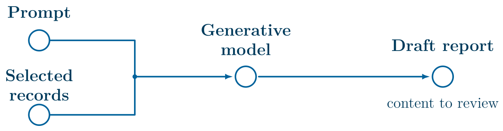
Illustrative report-drafting example. Generative models can also be components of agents.Full source credits and teaching detail
NIST AI 600-1 describes generative AI in terms of producing synthetic content, including text, images, audio and other media. This diagram shows one generation call: selected records and a request enter a model, which produces a draft. It does not say every generative-AI application is a single call. An LLM-based agent can use a generative model inside a repeated decision process. These categories describe different roles, not three mutually exclusive technologies or stages of a historical evolution. Generated wording is not itself numerical grid evidence; a study report should cite the engineering records used.
[GEN01] National Institute of Standards and Technology. Artificial Intelligence Risk Management Framework: Generative Artificial Intelligence Profile. NIST AI 600-1. July 2024. Read full source / Full paper
[DEF03] Erik S. and Barry Zhang. Building effective agents. Anthropic Engineering, December 19, 2024. Live article reviewed October 17, 2026. Read full source
Say: An AI agent observes an environment and chooses actions that affect it. This definition predates large language models. In the textbook picture, observations arrive through sensors and actions leave through actuators. For a software study assistant, the observations may be case files, measurements and solver logs. Its actions may be requests to a database or a simulator. The decision rule uses what has been observed so far. That does not require a robot or a physical actuator. It also does not require unrestricted autonomy. We choose the task and permissions. A solver can remain responsible for electrical calculations while an agent decides which permitted study to request next.
Show / explain: Start with the environment, follow the sensor arrow into the agent, then the actuator arrow back out. Translate each element into a software study example. The source figure is an older author-hosted textbook chapter.
Ask: What could count as an observation for a grid-study agent?
Expected answer: A versioned case file, a timestamped measurement, a solver status or a returned constraint violation.
Transition: Now separate the part that chooses an action from the part that carries it out.
Show this slide's source visual
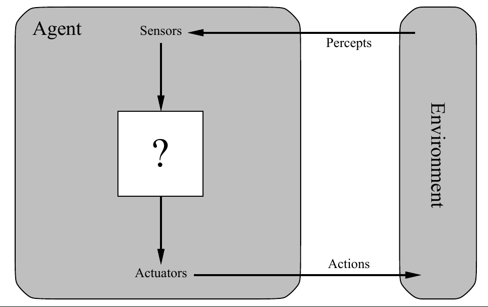
Russell and Norvig’s original agent diagram, Figure 2.1. A software agent’s sensors and actuators can be software interfaces.Full source credits and teaching detail
The equation is teaching notation: the policy uses the history of observations to choose the next action. It is not the textbook’s exact notation. The agent function is this abstract mapping, and a program implements it. A grid-study agent may observe case files and solver logs, then call a tool, ask for information or return a report. This classical definition predates LLMs. It also includes many older forms of automation. The linked sample chapter is from the second edition, even though its URL says fourth edition. The reading guide records that difference. Teaching notation: a_t = pi(o_1, ..., o_t), a rule mapping past observations to the next action. The original textbook figure replaces the teaching redraw. The question mark represents the agent’s decision mechanism; observations enter through sensors and actions leave through actuators. This is the author-hosted older chapter draft, cited as second edition.
[DEF01] Russell, Stuart J., and Peter Norvig. Artificial Intelligence: A Modern Approach. 2nd ed. Upper Saddle River, NJ: Prentice Hall, 2003. Chapter 2, Intelligent Agents, pp. 32-58. Author-hosted chapter draft dated 2002. Read full source / Full paper
Say: The agent chooses a permitted step. A tool performs a defined operation and returns a result. For example, the agent can request a power-flow calculation for case F12. The tool interface should identify the case, input versions and settings. The solver then calculates the voltages and flows. The returned evidence should include status and a record that can be inspected. If the solver reports an error, the agent may choose another allowed check or ask for help. The surrounding runtime executes the calls and saves progress. Planning and memory can support that process, although every design need not use separate modules for them. The architecture alone gives no authority to operate equipment.
Show / explain: Point from the core to tools, then back to the returned result. Identify planning and memory as possible supporting roles. Use the run_pf case example rather than interpreting every box as a mandatory component.
Ask: Who calculates the voltage in this example?
Expected answer: The engineering solver. The agent chooses the request and uses the solver's returned evidence.
Transition: A workflow can also call tools, so the next distinction concerns control of the sequence.
Show this slide's source visual
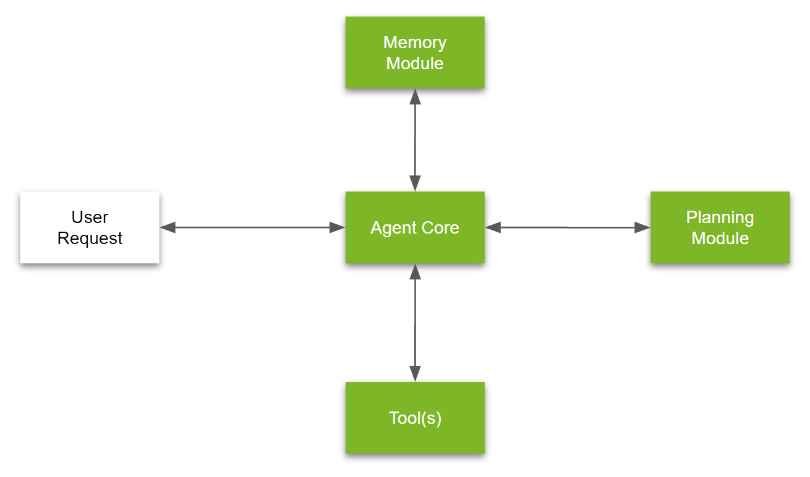
Original NVIDIA agent design: the core connects a request with tools, planning and memory. Other designs can combine these roles.Full source credits and teaching detail
A run_pf request should identify the study case. Its response should include status, numerical results and an evidence ID. The solver computes the electrical result. After an error, an LLM may choose another allowed check or stop and ask for help. The runtime software saves progress and carries out those choices. This example gives no permission to switch live equipment. A service may contain its own agents and still act as a tool for the agent calling it. Source: NVIDIA Technical Blog, Figure 1. This is a published conceptual design; separate memory or planning modules are not required in every AI agent. Source figure locator: Figure 1: General components of an agent. Original source URL: https://developer.nvidia.com/blog/introduction-to-llm-agents/
[DEF06] LangChain maintainers. Tools. Docs by LangChain, Python open-source documentation. Accessed 17 October 2026. Read full source
[DEF03] Erik S. and Barry Zhang. Building effective agents. Anthropic Engineering, December 19, 2024. Live article reviewed October 17, 2026. Read full source
[DEF01] Russell, Stuart J., and Peter Norvig. Artificial Intelligence: A Modern Approach. 2nd ed. Upper Saddle River, NJ: Prentice Hall, 2003. Chapter 2, Intelligent Agents, pp. 32-58. Author-hosted chapter draft dated 2002. Read full source / Full paper
[NV02] Tanay Varshney. Introduction to LLM Agents. NVIDIA Technical Blog. November 30, 2023. Read full source
Slide 6. Workflow or agent: who chooses the next step?
00:06:30-00:08:00 / 1.5 minutes
Say: In a fixed workflow, the code defines the steps and branches. For example, every case may pass through input validation, power flow and reporting. In an LLM agent, the model chooses some next steps from the allowed actions using the evidence so far. A design can combine both. We may require validation in code while allowing the model to choose which diagnostic tool to call. Anthropic's distinction is useful for engineering discussions, but it does not cover every historical meaning of agent. A loop alone is also insufficient evidence of model-directed choice. Inspect the actual routing rule and the model's role in it.
Show / explain: Follow the model-to-action-to-feedback loop in the documentation figure. Contrast it verbally with a fixed three-step script. Emphasize that a mandatory check can surround a flexible model decision.
Ask: Does a retry loop by itself prove that the model chooses the workflow?
Expected answer: No. Code can implement a fixed retry rule. We need to see how the next action is selected.
Transition: That flexibility makes the task's goals and authority especially important.
Show this slide's source visual
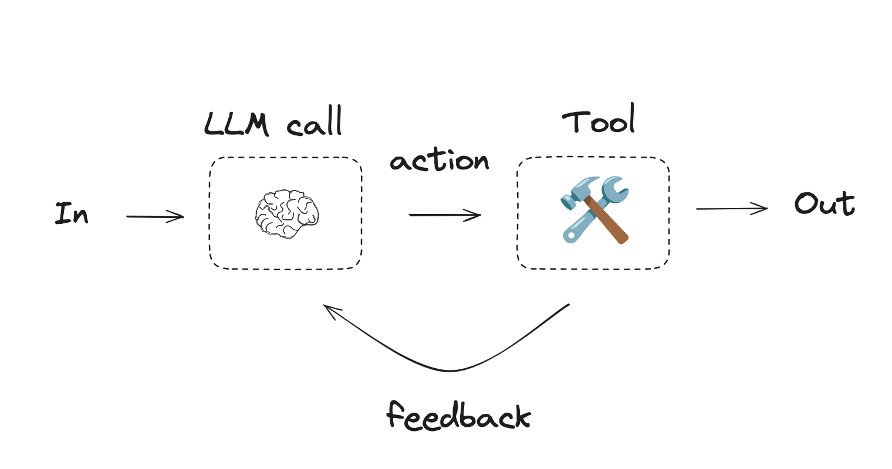
Original LangGraph documentation figure. The model chooses an action, receives feedback and can choose again.Full source credits and teaching detail
This distinction comes from Anthropic’s practitioner account. It is useful engineering language, not a universal definition. Its workflow patterns include routing, orchestrator-workers and evaluator-optimizer loops. A system can combine fixed requirements with an LLM choosing among allowed next steps. PowerDAG later shows this combination. Source: LangChain documentation maintainers, official LangGraph documentation. Accessed October 18, 2026. This documentation convention concerns LLM applications, not all classical AI agents. Source figure locator: Opening workflow comparison: selected Agent panel. Original source URL: https://docs.langchain.com/oss/python/langgraph/workflows-agents
[DEF03] Erik S. and Barry Zhang. Building effective agents. Anthropic Engineering, December 19, 2024. Live article reviewed October 17, 2026. Read full source
[DEF04] LangChain maintainers. LangGraph overview and Tools. Docs by LangChain, Python open-source documentation. Accessed October 17, 2026. Read full source
[LG04] LangChain documentation maintainers. Workflows and agents. Docs by LangChain, Python LangGraph documentation. Undated live documentation; accessed October 18, 2026. Read full source
Say: A useful assignment states what the agent should achieve, which tools it may use and when it must stop. Our example permits studies and an evidence report. The operator reviews the findings and decides whether a later operating action is allowed. Review may also lead to a request for more analysis. The generic LangGraph form shows one way software can pause for outside input. It is not a utility dispatch screen. The operating process must establish the reviewer's identity, the exact case being reviewed and the permitted response. Approval of an old study should not silently become approval of a changed action or a different grid state.
Show / explain: Read the review form as a pause in a software process. Point out the information a grid-specific review would additionally need: case identity, current versions, evidence and a clearly stated proposed action.
Ask: If a reviewer approves a report, does that automatically authorize live switching?
Expected answer: No. The scope of that approval and the separate operating permissions must be explicit.
Transition: We can now place retrieval, tools, memory and orchestration in the same picture.
Show this slide's source visual
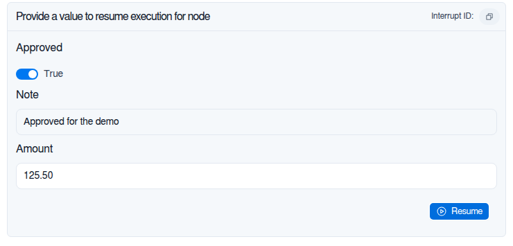
Original LangGraph Studio review-form excerpt. This is a generic demo, not a utility interface.Full source credits and teaching detail
This is an illustrative advisory-study policy informed by classical work on agency. Wooldridge and Jennings discuss autonomy, response to change, initiative and interaction; they do not prescribe this grid-operator approval process. The example gives the agent permission to run agreed studies and prepare evidence. The operator can request changes, stop the process or approve a later operating action. This diagram does not give the agent direct control of physical equipment. Source: LangChain documentation maintainers, official LangGraph documentation. Accessed October 18, 2026. This is a generic software demonstration, not an operator dispatch interface or a utility deployment. Source figure locator: Interrupt response schema / Studio form. Original source URL: https://docs.langchain.com/oss/python/langgraph/interrupts
[DEF02] Wooldridge, Michael, and Nicholas R. Jennings. Intelligent agents: theory and practice. The Knowledge Engineering Review 10, no. 2 (June 1995): 115-152. https://doi.org/10.1017/S0269888900008122. Read full source / Full paper
[DEF01] Russell, Stuart J., and Peter Norvig. Artificial Intelligence: A Modern Approach. 2nd ed. Upper Saddle River, NJ: Prentice Hall, 2003. Chapter 2, Intelligent Agents, pp. 32-58. Author-hosted chapter draft dated 2002. Read full source / Full paper
[LG03] LangChain documentation maintainers. LangGraph Interrupts. Official LangChain documentation. Accessed 2026-10-17; live documentation. Read full source
Slide 8. A model can use records, tools and memory
00:09:30-00:11:00 / 1.5 minutes
Say: Retrieval finds relevant records. Tools perform defined tasks. Memory preserves context or earlier results. An LLM can use these capabilities while working through a goal. LangGraph can coordinate the execution. PowerAgent develops power-domain models, interfaces and workflows. PowerDAG is a particular research system with its own supervisory design. These names describe different roles, so we should avoid treating them as interchangeable products. The image shows Anthropic's general augmented-model pattern. It is not a diagram of either power-system project. To judge a specific system, ask which component chooses, which component calculates, what evidence is saved and which checks the application enforces.
Show / explain: Identify retrieval, tools and memory around the central model. Give one power example for each: a manual, a power-flow service and a saved study result. Keep the architecture's attribution separate from the later research implementations.
Ask: What is the difference between a retrieved manual and a power-flow result?
Expected answer: The manual supplies documentary evidence. The solver result supplies a calculation for specified inputs. Both need identity and scope checks.
Transition: Let us look at what companies actually report doing.
Show this slide's source visual
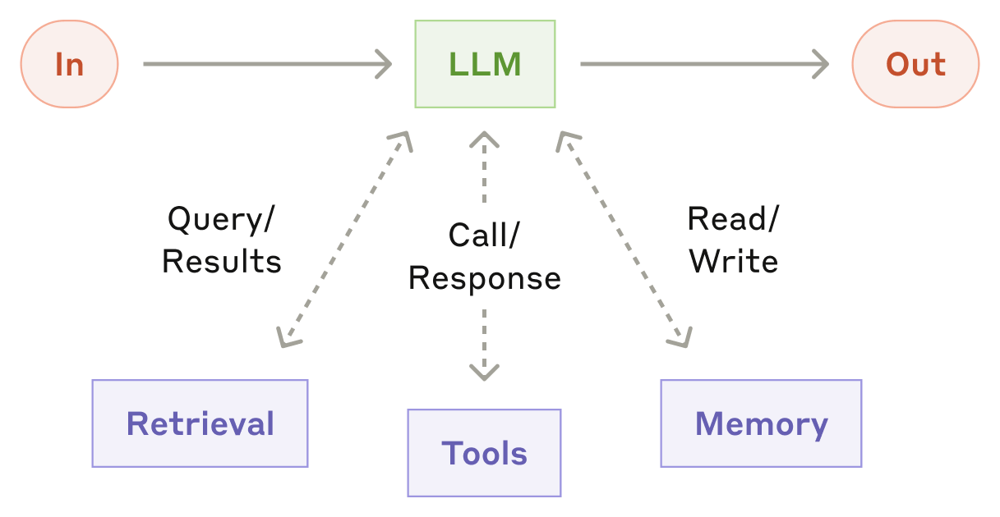
Original Anthropic building-block figure. It is a general pattern, not a diagram of PowerAgent or PowerDAG.Full source credits and teaching detail
These names refer to different roles. LangGraph can run both fixed workflows and processes where a model chooses steps. PowerAgent develops power-system models, tool interfaces and workflows. Later slides show a specific LangGraph example in its PowerWF repository. PowerDAG has its own supervisory design. A platform name alone does not establish numerical accuracy or deployment at a utility. The published figure shows an augmented language model. Retrieval, tools and memory are supporting capabilities; they are not mandatory in every agent. The diagram is reproduced from Anthropic with only empty margins trimmed in the display. The original image bytes are retained.
[DEF03] Erik S. and Barry Zhang. Building effective agents. Anthropic Engineering, December 19, 2024. Live article reviewed October 17, 2026. Read full source
[DEF04] LangChain maintainers. LangGraph overview and Tools. Docs by LangChain, Python open-source documentation. Accessed October 17, 2026. Read full source
[PA02] Power and AI Initiative / PowerAgent community, Harvard SEAS. PowerAgent — Open-Source Agentic AI for Power Grids. Official Harvard project website. Live project page reviewed 17 October 2026. Read full source
[PD01] Emmanuel O. Badmus, Amritanshu Pandey. PowerDAG: Supervisory Agentic AI System for Automating Distribution Grid Analysis. arXiv preprint, version 4. 5 July 2026 (v4); first submitted 18 March 2026. Read full source
Slide 9. PJM uses HyperQ to review connection applications
00:11:00-00:13:00 / 2 minutes
Say: PJM's interconnection work provides a concrete document-review example. Tapestry's June 2026 report says HyperQ entered Cycle 1 on 29 April, after PJM had confirmed testing in March. The reported Gemini agents check land-use rights, property parcels and tariff evidence for 811 generation applications. They help establish whether application materials are ready for the electrical study. Engineers retain the final decision. This is useful because a study can begin with incomplete or inconsistent evidence. It does not establish autonomous power-flow analysis. The article also discusses a future migration to Google ADK, so we should not label that future runtime as the deployed implementation.
Show / explain: Show the publisher and date in the article header. Identify the pictured animation as publisher material. Connect the document checks to the engineering inputs they precede.
Ask: Which part of an interconnection application is being assisted here?
Expected answer: Document and readiness checks before the electrical study, with final human review.
Transition: The next slide asks exactly what the reported processing numbers count.
Show this slide's source visual
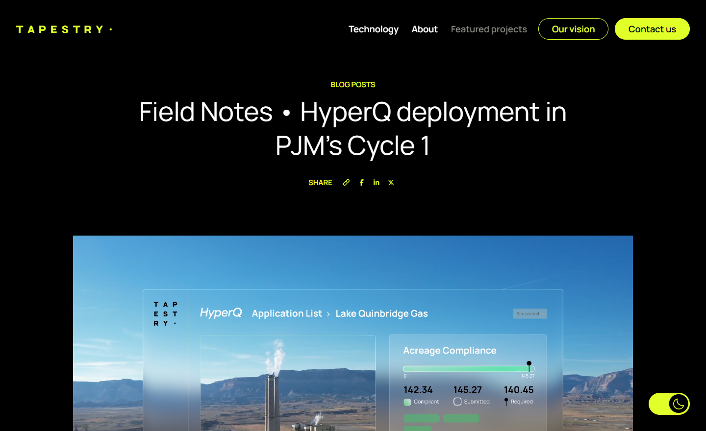
Original Tapestry article and published animation still. Supplier report, June 2026.Full source credits and teaching detail
Tapestry’s 11 June report covers 811 generation applications. Agents perform limited document and evidence tasks. The report does not establish an agent making a power-flow conclusion or an automatic regulatory decision. The system guides the agents’ work and records evidence citations. The article describes migration to Google ADK as future work, so do not label the deployed system an established ADK implementation. Tapestry, HyperQ Field Notes, June 11, 2026 Supplier report of deployment. PJM separately confirmed earlier testing. The hero is a still captured from the publisher's animation, not an independently verified live PJM application record. Original page: https://www.tapestryenergy.com/en/projects/field-notes-hyperq-deployment-in-pjm-s-cycle-1
[N01] Tapestry. Field Notes • HyperQ deployment in PJM’s Cycle 1. 2026-06-11; deployment entry 2026-04-29. Read full source
[N02] Tapestry. How agentic AI can help grid operators speed up interconnection. 2025-12-08 (linked chronological entry in N01); live article reviewed 2026-10-17. Read full source
[N06] PJM Interconnection. Successful Interconnection Reforms, Other PJM Initiatives Seek To Maximize Electricity Supplies. 2026-03-16. Read full source
Slide 10. HyperQ: what the reported numbers measure
00:13:00-00:15:00 / 2 minutes
Say: A numerical headline becomes useful only when we know its denominator and timing boundary. Here the supplier reports 811 applications, 4,581 raw documents and 2,328 document bundles. Checking four criteria across those bundles produces 9,312 macro-assessments. That is a count of assessments, rather than a count of projects. The displayed timings cover computer processing and exclude document transfer and human validation. We therefore cannot read the chart as the duration of the entire interconnection process. It also gives no confusion matrix from which to calculate review accuracy. When presenting an efficiency claim, name both the work completed by the system and the work that remains for people.
Show / explain: Read the unit beside each number before discussing speed. Connect 2,328 bundles times four criteria to 9,312 assessments. Point to the timing boundary stated in the caption.
Ask: Can 9,312 assessments be described as 9,312 generation projects?
Expected answer: No. The report covers 811 applications and multiple checks per document bundle.
Transition: An outage-review example uses a different task and a different timing boundary.
Show this slide's source visual
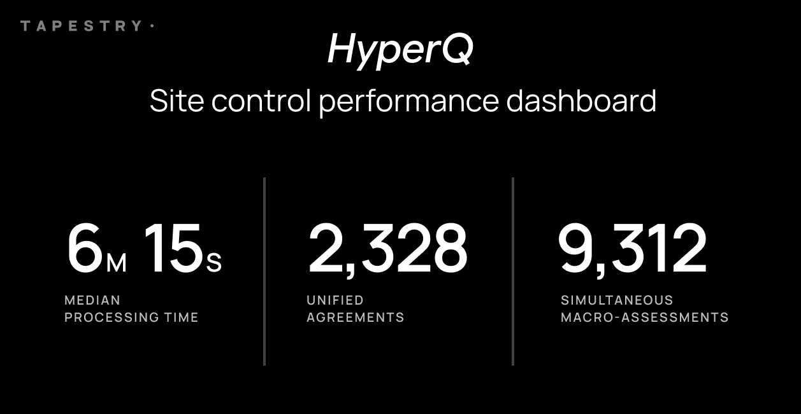
Original Tapestry performance graphic, June 2026. The timing covers only computer processing.Full source credits and teaching detail
The supplier reports grouping 4,581 raw site-control documents into 2,328 bundles and checking four criteria. The graphic’s 9,312 macro-assessments are not 9,312 projects. The full interconnection process also includes document transfer and human review. The report gives no confusion matrix or accuracy denominator. We omit its historical 20x headline because it compares manual work with computer processing using different work and timing boundaries.
[N01] Tapestry. Field Notes • HyperQ deployment in PJM’s Cycle 1. 2026-06-11; deployment entry 2026-04-29. Read full source
Slide 11. CAISO/OATI: agents help review planned outages
00:15:00-00:17:30 / 2.5 minutes
Say: The CAISO and OATI example concerns planned-outage review. OATI describes Workflow, Advisor and Recon agents working under a coordinator, with operators retaining authority. CAISO's July 2025 account described a pilot. OATI's later 2026 report describes daily production use and processing more than 500 next-day requests nightly in under eight minutes. That is a batch-processing claim. It implies more than 62.5 requests per minute for the reported batch, but it does not give the latency of an individual request or the remaining reviewer effort. The control-room photograph gives context. It does not independently verify the software or the performance result.
Show / explain: Identify the real control-room photo, then direct attention to the supplier-reported task and batch figures. Distinguish the pilot account from the later production-use statement.
Ask: What measurement would help an operator judge the practical benefit?
Expected answer: End-to-end completion time and human review effort, alongside error rates and the batch processing result.
Transition: Planning-study preparation is another promising place to assist engineers.
Show this slide's source visualReal California ISO control room. OATI supplies the batch result and later production-use claim.Full source credits and teaching detail
California ISO’s July 2025 account described a pilot. OATI’s 2026 field report describes daily production use but gives no exact production start date. The reported inequalities imply more than 62.5 requests per minute for the batch. They do not describe individual request latency. Do not compare eight machine-minutes with a separate analyst-hours figure as though both came from the same trial. The work prepares outage analysis and operating evidence. Reviewers make final decisions.
[C01] California ISO. Exploring AI to support smarter grid management. 2025-07-28. Read full source
[C02] OATI. Generative and Agentic AI in Grid Operations: Field Lessons from OATI, CAISO, PNNL, and EPRI. 2026 (exact publication day not displayed). Read full source
[I06] OATI (California ISO control-room photograph). California ISO control room, image published by OATI: California ISO control room with operators seated at curved desks facing a long wall of grid displays. Image accessed 17 October 2026. Read full source
Slide 12. Duke and AWS: agents help prepare planning studies
00:17:30-00:20:00 / 2.5 minutes
Say: AWS reports that Duke engineers use managed agents to prepare cases and coordinate interconnection studies. The September 2026 announcement describes data preparation falling from two weeks of manual work to hours. The agents coordinate existing models, scripts and physics software. Engineers retain responsibility for the engineering decisions. The source does not specify the final number of hours, the sample count or the model and software framework. We can describe the reported change without inventing a precise speedup. Also keep the task clear: faster input preparation is one part of a longer engineering and regulatory process. The operator photograph is contextual and predates the announcement.
Show / explain: Explain that the photograph shows a Duke operator, while the reported application supports planning. On the text, emphasize data preparation as the measured boundary.
Ask: Can we turn two weeks to hours into an exact percentage saving?
Expected answer: No. The final number of hours and the comparison conditions are unspecified.
Transition: Product announcements show possible integration paths, with a different level of evidence.
Show this slide's source visual
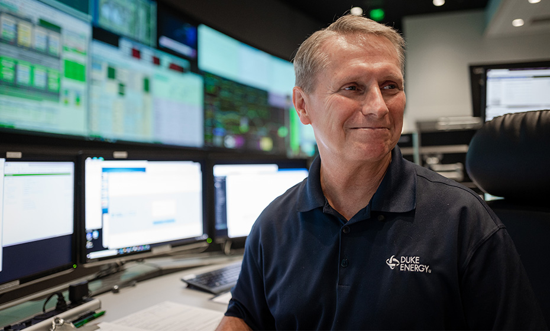
Duke operator, 2022, shown for context. The reported agents support planning, rather than this pictured operating desk.Full source credits and teaching detail
AWS’s 17 September 2026 announcement names Duke engineers using agents to coordinate studies. The agents prepare inputs and coordinate existing physics software, models and scripts. The report says data preparation fell from two weeks of manual work to hours. It gives neither the final number of hours nor a sample count. It identifies no SDK, model or runtime. Do not infer Strands or AgentCore from the cloud provider. Engineers make final decisions.
[U02] Amazon Web Services. AWS Launches Agentic Grid Planning Program to Accelerate Interconnection Studies. 2026-09-17. Read full source
[U03] Amazon Web Services. Agentic Grid Planning on AWS. Undated; reviewed 17 October 2026. Read full source
[I03] Duke Energy / illumination. Duke Energy, illumination, August 2, 2022: Duke Energy grid operator Howard Greene seated before many control-room displays. Image accessed 17 October 2026. Read full source
Slide 13. Siemens announces agents for PSS E planning studies
00:20:00-00:22:00 / 2 minutes
Say: Siemens announces agentic planning features within Gridscale X and PSS E. The proposed agents coordinate transmission-planning simulations through software interfaces, including connection studies for data centers and other large loads. An established simulation environment offers a practical place to connect an assistant to numerical tools. The announcement does not identify a production user of those new agentic PSS E features. The same release mentions Alliander's migration to the platform, which establishes a different fact. A platform customer is not automatically a user of every newly announced capability. We should keep the feature announcement, customer adoption and measured engineering outcome separate when teaching this case.
Show / explain: Point to the original press-release header and label its evidence type as an announcement. Describe the simulation coordination concept without treating the screenshot as a live application record.
Ask: What additional evidence would establish production use of this feature?
Expected answer: A named user and a clear account of the actual agentic feature in operation, ideally with measured outcomes.
Transition: A direct corporate disclosure gives us another type of use claim.
Show this slide's source visual
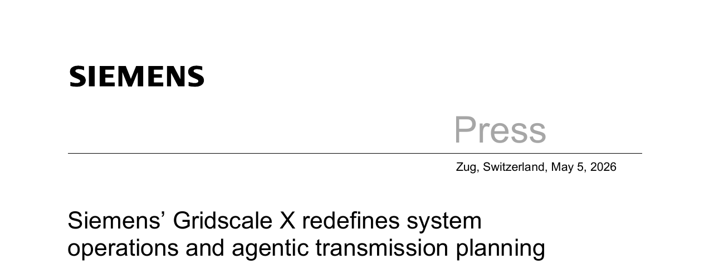
Original Siemens press-release header, 2026. This is an announced product capability.Full source credits and teaching detail
The same release describes Alliander’s migration to the platform. That shows platform adoption, not use of the newly announced agentic PSS E features. The claim of up to 50% faster study response has no disclosed benchmark method, so we do not plot it. The announcement shows a possible integration path: agents coordinate an established simulation environment. Siemens AG, press release, May 5, 2026 Product announcement. The separately named Alliander platform migration does not prove production use of the new agentic PSS E capability. Original page: https://press.siemens.com/global/en/pressrelease/siemens-gridscale-x-redefines-system-operations-and-agentic-transmission-planning
[N03] Siemens. Siemens’ Gridscale X redefines system operations and agentic transmission planning. 2026-05-05. Read full source
Slide 14. National Grid reports agents checking project plans
00:22:00-00:24:00 / 2 minutes
Say: National Grid's May 2026 results transcript reports agentic checks within its capital control tower. The task is project assurance: examining early project options and documents at approval stages. Feedback arrives while project managers can still revise their plans. This is a useful example of assistance around a decision process rather than direct grid control. The transcript provides no agent framework, accuracy estimate or timing measurement. Later comments about optimizing access outages concern future work. Nearby results about other automation should not be reassigned to this agentic system. Read each claim with its own task, timing and evidence.
Show / explain: Use the slide's three statements as a sequence: project material, agent feedback, manager revision. There is no software screenshot here, so keep the explanation concrete through an example project document.
Ask: What can we conclude from the disclosure alone?
Expected answer: The group reports using agents for project assurance. The source does not quantify their performance.
Transition: Good project evidence also depends on good underlying data.
Full source credits and teaching detail
The CEO’s 14 May 2026 results transcript reports agentic project-assurance use. “Capital control tower” names the system supporting project checks. Later comments about optimizing access outages describe future plans. Do not attribute nearby FLISR, outage-minute or gas-crew results to this agent. The source verifies reported use without supporting a numerical performance estimate.
[N04] National Grid. National Grid Full Year Results 2025/26: Video Webcast Transcript. 2026-05-14. Read full source
Say: NYPA's webinar example focuses on data quality. It describes Databricks and Ataccama checks for meter data before AI uses it. Meter records need consistent identifiers, timestamps and quality information to support later analysis. A separate demonstration links Genie to Ataccama through MCP, the Model Context Protocol. That demonstration uses a product and reorder example. We should keep the NYPA data-quality implementation distinct from the generic agent demo. Together they illustrate why agents need reliable inputs and a clear connection to data services. They do not establish a production NYPA agent issuing grid commands.
Show / explain: Identify the NYPA speaker in the original webinar artwork. Explain the separation between the meter-data discussion and the product-data demonstration.
Ask: Why is data quality relevant even if no agent controls equipment?
Expected answer: A planning or advisory answer can still be wrong when it uses missing, duplicated or incorrectly identified data.
Transition: A hiring requirement can show growing interest, while supporting a narrower conclusion.
Show this slide's source visualOriginal Ataccama webinar artwork. The NYPA speaker appears at lower right.Full source credits and teaching detail
This supplier-hosted webinar discusses NYPA’s quality checks for frequently arriving meter data. The separate demo uses Genie and an Ataccama MCP service with a product/reorder table. MCP, the Model Context Protocol, is a standard way to connect AI systems to tools and data. Keep the NYPA implementation and the generic agent demo separate. We use October 2026 because the fetched event and on-demand report show adjacent dates. These sources support the discussion of data agents need, without establishing a production grid-command agent at NYPA. We excluded the earlier governance-agenda search result because the full original was unavailable. Ataccama, original webinar report with NYPA Data Quality Lead Saptaparna Gupta, October 14, 2026 NYPA discusses meter-data quality checks. The separate product/reorder demo does not establish a production NYPA grid-control agent. Original page: https://www.ataccama.com/webinar/on-demand-trust-driven-medallion-architecture
[N09] Session speakers: Saptaparna Gupta (NYPA), Oleksandra Bovkun (Databricks), Eliza Pochinova (Ataccama). On demand: Trust-driven medallion architecture: How to make your CDEs ready for AI. Ataccama. 2026-10-14 (on-demand page); event page currently lists 2026-10-13. Read full source
[N10] Saptaparna Gupta (NYPA), Oleksandra Bovkun (Databricks), Eliza Pochinova (Ataccama). Trust-driven medallion architecture: how to make your CDEs ready for AI. Ataccama. 2026-10-13, 11:00 AM EDT (date displayed on fetched event page). Read full source
Slide 16. Eversource: adding agentic skills to grid studies
00:25:30-00:27:00 / 1.5 minutes
Say: Eversource already uses MATLAB and Synergi Electric for distribution studies. A MathWorks account describes conventional Monte Carlo and parallel numerical simulations for examining many possible conditions. Separately, an October 2026 engineering vacancy asks for agentic and AI-based workflows in MATLAB. This shows the company seeking skills that could connect new workflows to existing tools. It does not show that an agentic platform has been deployed. The simulation timing improvement in the older account belongs to conventional automation. Keeping that distinction lets us discuss the motivation honestly: an established engineering environment can make agent integration plausible, while the job posting indicates capability building.
Show / explain: Show the official vacancy header and the agentic-workflow wording. Explain that the earlier simulation work and the vacancy are separate pieces of evidence.
Ask: Does a job posting establish a deployed agentic system?
Expected answer: No. It supports hiring intent and desired engineering capabilities.
Transition: GE Vernova illustrates the platform context into which such capabilities might fit.
Show this slide's source visual
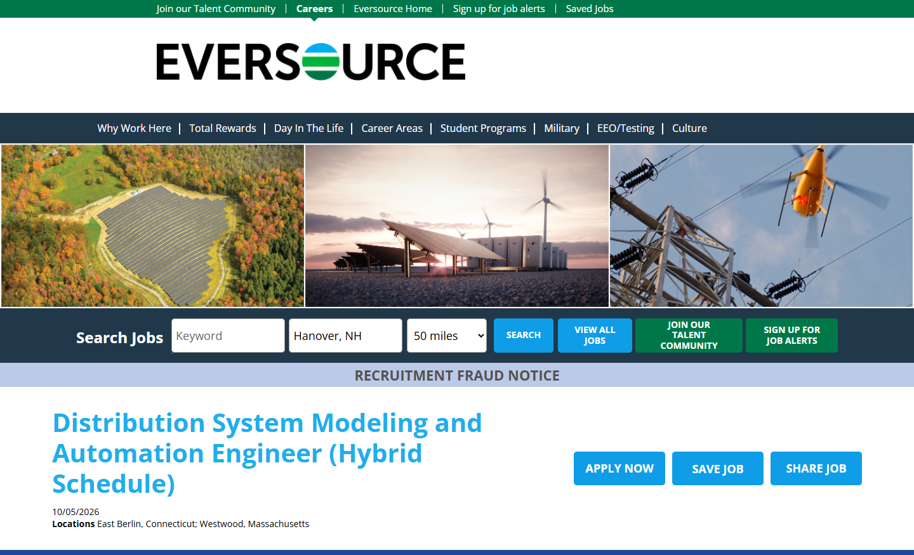
Original Eversource vacancy, 5 October 2026.Full source credits and teaching detail
The April 2025 MathWorks report describes probabilistic distribution studies. These use Monte Carlo sampling and parallel numerical simulations to examine many possible conditions. Its timing improvement belongs to conventional simulation automation, so we do not show it as an agent result. Eversource’s October 2026 posting concerns distribution-system modeling and automation and explicitly mentions agentic MATLAB workflows. It shows the company seeking this capability for an existing simulation environment. Eversource Energy, official engineering vacancy, October 5, 2026 Engineering skill requirement and integration intent. The posting later explicitly mentions agentic MATLAB workflows, but a vacancy does not prove deployment. Original page: https://jobs.eversource.com/job/east-berlin/distribution-system-modeling-and-automation-engineer-hybrid-schedule/7774/101576695504
[N07] Eversource Energy (employer). Distribution System Modeling and Automation Engineer (Hybrid Schedule). Eversource Energy. 2026-10-05. Read full source
[N11] MathWorks; named Eversource engineer John Kreso quoted. Eversource Energy Collaborates with MathWorks to Incorporate Renewable Energy Sources into System Planning Process Using Probabilistic Load Flow Automation. MathWorks. 2025-04-29. Read full source
Slide 17. GE Vernova: a platform that can connect grid tools
00:27:00-00:28:30 / 1.5 minutes
Say: GE Vernova's GridOS example concerns a platform for coordinating grid software and information. The public announcement names Alabama Power's use of GridOS for Distribution. Shared software can provide places to connect study tools, saved evidence and operator workflows. An agent integrated into that environment would still need clear interfaces, current case identity, engineering checks and bounded authority. The public statement does not isolate a reliability improvement caused by agents or establish an autonomous LLM controller. This case helps us think about adoption infrastructure. We should teach the difference between having an integrated platform and proving that a particular agent improves an operating task.
Show / explain: Use the control-room image to discuss where evidence could reach an operator. Describe interfaces and review as a teaching integration example rather than as verified details of the product.
Ask: What else would we need before claiming an agent improved reliability?
Expected answer: A defined agent task and a study connecting that task to measured reliability outcomes under stated conditions.
Transition: Now consider the people who would review an assistant's work.
Show this slide's source visual
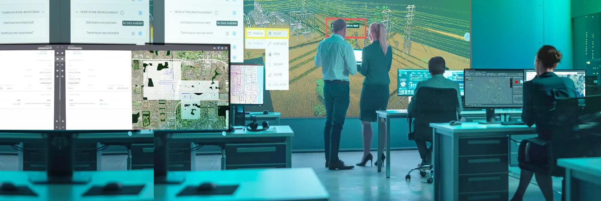
Official GridOS promotional composite. The platform example does not establish a measured agent-specific result.Full source credits and teaching detail
This GE example concerns GE Vernova’s electric-power business. The February 2026 GridOS announcement names a utility context. It does not establish a specific autonomous LLM controller. Our teaching example explains what an integrated agent would also need: clear tool interfaces, saved state, evidence checks and limits on its authority.
[C07] GE Vernova. GE Vernova Launches GridOS for Distribution, the Industry's First Unified Solution for Grid Orchestration. 2026-02-03. Read full source
[I01] GE Vernova. GE Vernova: GE Vernova GridOS promotional control-room composite with people and grid software displays. Image accessed 17 October 2026. Read full source
Say: A PNNL survey of 20 control-room operators reported that, on average, 61 percent of tasks needed completion in under 30 minutes. This is an average share of tasks, not the percentage of operators. The survey had 75 questions, but that does not create 1,500 independent timing observations. The source gives no task denominator or spread behind the 61 percent. Treat it as a small self-report study that motivates attention to deadlines. For an assistant to help, it must fit within the time available for finding, checking and acting on evidence. A fast draft that requires extensive correction may still miss that deadline.
Show / explain: Identify the real control-room context. Read the sample size, percentage and time threshold as three separate items. Ask learners to name one time-critical task they actually perform.
Ask: Would a faster model response alone prove a better control-room tool?
Expected answer: No. We must measure the completed task, including review and correction, within its deadline.
Transition: We will use three checks to judge whether a recommendation is useful.
Show this slide's source visualDuke Energy control room, 2022. The PNNL survey is a separate study.Full source credits and teaching detail
The 61% is an average share of tasks performed or supported. It is not the percentage of operators. The source gives neither the task denominator nor variance. Twenty respondents do not support a binomial interval for that 61%. Seventy-five survey items do not imply 1,500 independent timing observations. This small self-report study is not a national estimate. Ask which tasks need quick decisions and which allow more investigation.
[Q01] Corey Fallon, Brett Jefferson, Tyler Ryan. An Analysis of Grid Operators. Pacific Northwest National Laboratory. 2023-04-19. Read full source
[O01] PJM Interconnection. What Happens in the Control Room. 2026-04-16. Read full source
[I02] Duke Energy / illumination. Duke Energy, illumination, August 2, 2022: Duke Energy employees in an Energy Control Center, with one pointing toward a display. Image accessed 17 October 2026. Read full source
Slide 19. Three checks for a useful recommendation
00:30:30-00:32:00 / 1.5 minutes
Say: The first check is data validity. Does the evidence refer to the right asset, time, units and grid connections? The second is engineering validity. Does the study solve the requested problem and meet the relevant equations and limits? The third is decision validity. Does the result justify the next action that this user is allowed to take? Each can fail independently. A well-formatted result can use yesterday's topology. A converged optimization can change a prohibited setting. A correct base-case study can leave required outages untested. These checks give us a consistent way to inspect every later paper and exercise.
Show / explain: Use the conventional situational-awareness screenshot to ask which displayed evidence would need an asset, timestamp and case identity. The three checks are tutorial teaching categories, not measured CAISO agent results.
Ask: If a calculation converges on the wrong topology, which checks are affected?
Expected answer: The input consistency check fails, and the engineering conclusion may no longer apply to the requested grid.
Transition: We begin by turning a broad request into a testable assignment.
Show this slide's source visual
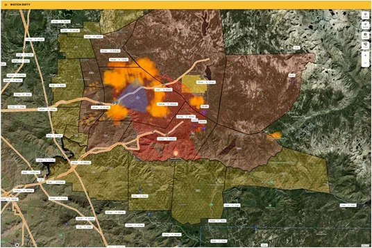
Real CAISO Watch Duty display. It combines fire and transmission-line information for operator awareness.Full source credits and teaching detail
These are separate checks. A correctly formatted call may still use old grid connections. An optimization may converge after changing a variable the user was not allowed to change. A correct result may still leave part of the decision unanswered. These checks form the acceptance contract: the agreed conditions a result must meet. We reuse it in the examples and exercises. This original utility screenshot provides a concrete example of displayed evidence to inspect. It is conventional situational-awareness software, not an agent implementation or a claim that the slide’s three checks were measured by CAISO.
[O05] John Phipps. Control center modernization is enhancing reliability. California ISO. 2025-09-10. Read full source
Slide 20. A clear task makes success easier to test
00:32:00-00:33:30 / 1.5 minutes
Say: Suppose the user asks whether an earlier study still applies after an event. We first identify the relevant asset, event and prior result. A snapshot records the data time, topology version and model revision. The assignment should say what evidence is required and which studies are allowed. It should also specify stopping conditions: missing data, changed inputs, tool failure, exhausted budget or insufficient permission. A successful outcome might be an evidence-backed answer, or a clear request for information needed to finish. The number of tool calls or length of the report does not define success. All F12 labels and policies in this teaching example are invented.
Show / explain: Use the product screen as context for the information involved. Verbally form a request using a named case, snapshot and allowed report. Separate that invented task contract from product capabilities.
Ask: What should the agent return if required current data cannot be obtained?
Expected answer: A clear unresolved status, the missing information and the reason the original question remains unanswered.
Transition: We can now follow an agent's decision loop on that assignment.
Show this slide's source visual
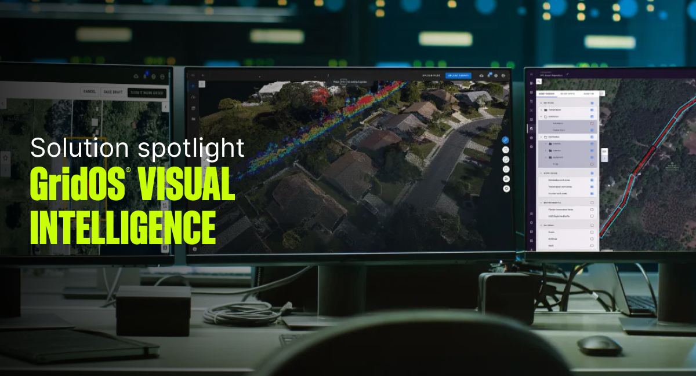
GE Vernova’s published GridOS Visual Intelligence screen. This product image supplies task context, not an agent result.Full source credits and teaching detail
All F12 records and policies are invented teaching data, not utility operating rules. A snapshot identifies the data time, grid-connection version and model revision. Start by identifying the user, the result they need and the actions they may take. Success means meeting these agreed requirements. Answer length and the number of tool calls do not establish success. The real product screen illustrates the grid information a bounded task may use. The acceptance contract on this slide remains an original teaching example.
[I09] GE Vernova. GridOS Visual Intelligence product screens. Accessed 17 October 2026. Read full source
Slide 21. An LLM agent acts, reads the result and decides again
00:33:30-00:35:30 / 2 minutes
Say: The agent acts, reads the returned evidence and decides again. Imagine that a tool confirms the asset identity but the next tool returns stale measurements. That observation should change the next step. The agent can request a refresh, ask a person or stop with an unresolved result. The surrounding software runs each tool against a specified snapshot and records what happened. A historian returns measurements. A simulator returns modeled behavior. Those outputs answer different questions, even if both arrive as structured data. Feedback in this loop means using returned evidence to choose another step. It does not necessarily mean retraining model weights or learning a new control policy.
Show / explain: Trace the published agent loop from action to tool response to the next decision. Give one normal response and one error response. Ask which path each should trigger.
Ask: When the tool reports stale data, should the original plan continue unchanged?
Expected answer: No. The next step should address the missing current evidence or stop clearly.
Transition: The next example makes that stop condition explicit.
Show this slide's source visual
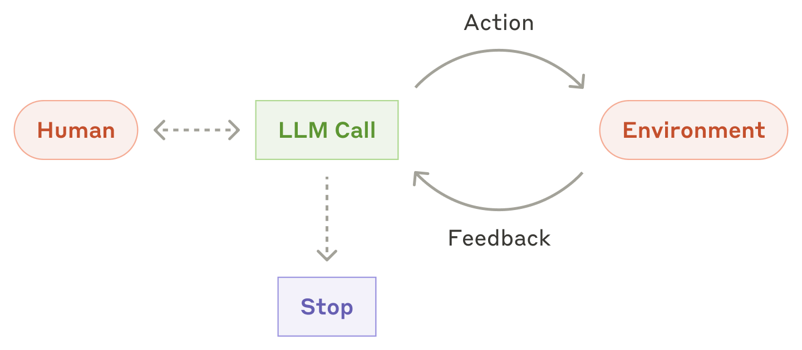
Original Anthropic agent-loop figure. In a grid study, feedback can be solver results or a failed check.Full source credits and teaching detail
The equation describes a software interface. It does not assume we observe the full physical system or that the history has the Markov property, meaning it contains everything needed to predict the next state. The model chooses a request using the goal and previous evidence. The software runs a service against a specific input snapshot. A historian, which stores time-stamped measurements, returns measured data. A simulator returns model results. Selecting either tool does not turn its output into a command to physical equipment. This is the original published conceptual agent pattern, not a measured utility or PowerAgent implementation. The display trims only empty margins. Feedback does not automatically mean model weights are being retrained.
[DEF03] Erik S. and Barry Zhang. Building effective agents. Anthropic Engineering, December 19, 2024. Live article reviewed October 17, 2026. Read full source
[LG01] LangChain documentation maintainers. LangGraph Graph API overview. Official LangChain documentation. Accessed 2026-10-17; live documentation. Read full source
[E01] Yihan (Logon) Wen, Xin Chen. X-GridAgent: An LLM-Powered Agentic AI System for Assisting Power Grid Analysis. arXiv preprint. 2025-12-23 (v1). Read full source
Slide 22. When data are stale, the next step is to stop
00:35:30-00:37:00 / 1.5 minutes
Say: A successful asset lookup does not guarantee that all later evidence is usable. In this example, the measurement tool marks its result as stale. The system should ask for current evidence and retain the original task as unresolved. It should not replace the missing measurement with an invented value or silently reuse an older one. A trace records the requests, results and case identity so that a reviewer can inspect this behavior. The published picture illustrates a generic gate in a workflow. The gate becomes useful only when the application defines the actual test and enforces it. Saving a trace also does not make the trace correct. It makes inspection possible.
Show / explain: Follow the chain to the gate. State the invented stale-data response and ask learners to choose the next action. Keep the original source figure's generic role clear.
Ask: What should appear in the report after the stale-data check fails?
Expected answer: The missing current evidence, affected case, reason for stopping and question that remains unresolved.
Transition: Even a current result can fail through a unit mismatch.
Show this slide's source visual
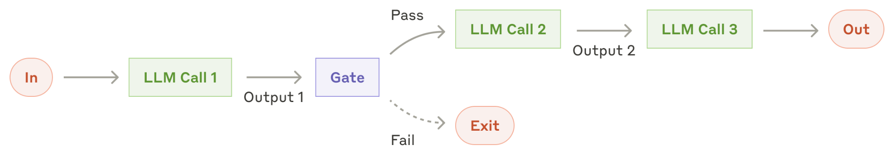
Original Anthropic gated workflow. In our study example, a stale input should fail the check and stop the sequence.Full source credits and teaching detail
A trace records the sequence of tool requests and results. Use the gate in this published figure to discuss an application check. As a spoken example, a study trace should record case IDs, data times and the returned results. When required data are unavailable or out of date, the system should say so. It must not invent a value or silently reuse an older one. Check whether the agent detects the problem and asks for the right update. A trace makes this inspection possible but does not itself prove the work is correct. Source: Anthropic, Building effective agents (December 19, 2024). A generic content-workflow pattern, not a physical-feasibility or utility-safety guarantee. Source figure locator: Workflow: Prompt chaining. Original source URL: https://www.anthropic.com/engineering/building-effective-agents
[DEF03] Erik S. and Barry Zhang. Building effective agents. Anthropic Engineering, December 19, 2024. Live article reviewed October 17, 2026. Read full source
Slide 23. Unit checks catch a kV versus p.u. mistake
00:37:00-00:38:30 / 1.5 minutes
Say: Per unit expresses a quantity relative to a chosen base. A measured 12.47 kilovolts equals 1.00 per unit only when the relevant voltage base is also 12.47 kilovolts and the definitions match. If an interface expects per unit, passing the number 12.47 without its unit changes its meaning. The tool should reject that request or require the information needed for an explicit conversion. Software checks should cover the unit, base and asset identity. A prompt saying use correct units is insufficient. After conversion, we still need to check whether the measurement and model are accurate. Unit checking solves one specific consistency problem.
Show / explain: Follow the wrong-value path, identify the missing base, then explain value divided by base. State the matching voltage convention before doing the simple division.
Ask: With a matching 12.47 kV base, what is 12.47 kV in per unit?
Expected answer: 1.00 p.u. The conversion still needs the correct asset and voltage definitions.
Transition: The next consistency issue concerns the network itself.
Show this slide's source visual
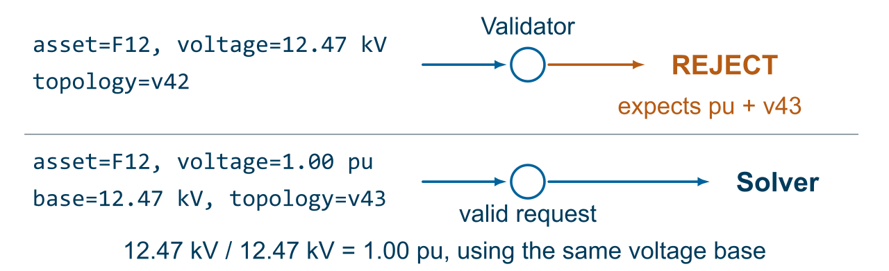
Teaching example with invented values. These values are not recommended operating limits.
Original teaching explanation or worked example; see the slide and instructor guide for its stated assumptions.
Slide 24. A study must match the current grid connections
00:38:30-00:40:00 / 1.5 minutes
Say: The earlier study used topology v42 with a closed switch. The event opens that switch and creates v43. The old result therefore describes a different electrical connection pattern. Updating the report's wording cannot update the voltages or flows. The application must identify the affected calculations, refresh their inputs and run them again. Matching versions is necessary but does not answer every question. We must also ask whether the model accurately represents the real grid and whether the measurements represent the event. This is why evidence should identify both its data snapshot and its model and topology revisions. A recent timestamp alone cannot establish all three.
Show / explain: Point to the changed switch in the before-and-after diagram. Trace which result belongs to v42 and which input snapshot now describes v43.
Ask: Can an old result become valid by changing its topology label?
Expected answer: No. The affected numerical work must actually use the changed network and be checked again.
Transition: We also need to choose the engineering problem that answers the request.
Show this slide's source visual
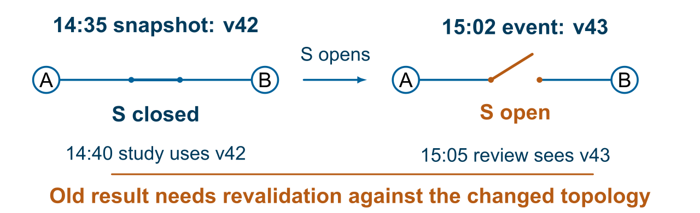
Invented before-and-after network. This illustration does not calculate power flow.
Original teaching explanation or worked example; see the slide and instructor guide for its stated assumptions.
Slide 25. A solver result depends on the problem it solves
00:40:00-00:42:00 / 2 minutes
Say: Power flow, optimal dispatch and dynamic simulation answer different questions. Power flow calculates a steady operating condition for specified injections. Optimization chooses permitted variables to improve an objective while meeting stated constraints. A dynamic study follows the system's response over time under a model of equipment behavior. The assistant must select the study that matches the question. A solver's success status belongs to that defined problem. We still inspect numerical residuals, modeled limits, scenario coverage and permissions. A solver can converge perfectly on a problem the user never requested. The generic routing diagram helps us discuss selecting a tool, while the engineering requirements must come from the actual assignment.
Show / explain: Name one question for each study type. Then follow the routing figure and identify the information needed before selecting a branch.
Ask: Does a successful power-flow run establish dynamic stability?
Expected answer: No. It answers a steady-state question. Dynamic stability requires an appropriate dynamic model and study.
Transition: Let us practice checking returned evidence before accepting a conclusion.
Show this slide's source visual
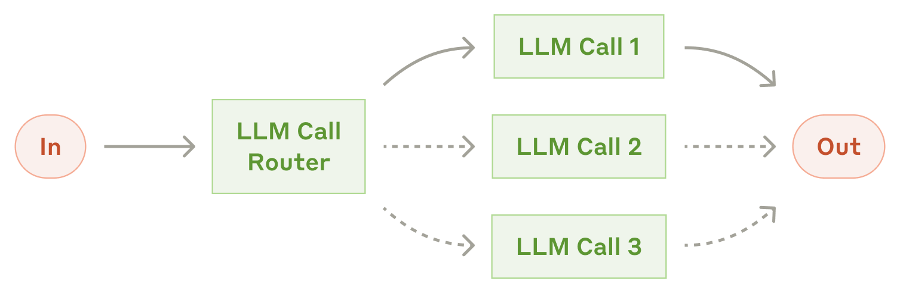
Original Anthropic routing pattern. Choosing an engineering study also requires selecting the right problem and tool.Full source credits and teaching detail
Keep solver status, equation errors (residuals) and modeled limit checks separate from whether the analysis covers the full request. A solver can converge on the wrong problem. The study requirements must state constraints and tolerances, meaning the allowed numerical error. This slide sets no universal voltage or loading limit. Permission to act remains a separate software and organizational decision. Source: Anthropic, Building effective agents (December 19, 2024). The picture illustrates routing; it does not establish an implemented power-system workflow. Source figure locator: Workflow: Routing. Original source URL: https://www.anthropic.com/engineering/building-effective-agents
[R01] Samim Konjicija, Slaven Peles. Integrating Agentic Artificial Intelligence with High-Performance Computing for Grid Planning. arXiv; EnergyCon 2026 proceedings forthcoming as described by authors. 3 September 2026; v1. Read full source / Full paper
[L01] GridGuard project / local source snapshot. GridGuard current project: README and graph source snapshot. Snapshot 17 October 2026; see research/GridGuard_source_snapshot.txt. Read full source
[DEF03] Erik S. and Barry Zhang. Building effective agents. Anthropic Engineering, December 19, 2024. Live article reviewed October 17, 2026. Read full source
Slide 26. Exercise 1: check three returned data packets
00:42:00-00:48:00 / 6 minutes
Say: Work in pairs. For this exercise, evidence must be no more than 60 seconds old, use topology v43 and express the quantity in per unit. The user may recommend actions only. Inspect packets A, B and C, choose which passes these initial rules and explain why the others fail. Then discuss the harder question: does passing these rules establish the complete engineering result or permission to execute anything? The 60-second threshold is an invented classroom rule. Your answer should use the stated contract rather than assumptions about an actual utility's procedures.
Show / explain: Run a six-minute timer: one minute alone, two in pairs, two sharing and one debriefing. Read age_s as age in seconds. Display all three packets throughout.
Ask: Which packet passes, and what remains unproved?
Expected answer: C passes the initial age, version and unit checks. A uses v42. B uses kV. C still needs asset mapping, model and engineering validity, coverage and review. Advisory permission does not authorize execution.
Transition: The same questions help us interpret published research.
Original teaching explanation or worked example; see the slide and instructor guide for its stated assumptions.
Slide 27. Power-system papers test different tasks
00:48:00-00:49:30 / 1.5 minutes
Say: The papers ahead investigate several different tasks. Disturbance analysis extracts information from recorded waveforms. Simulation assistants prepare and execute numerical studies. Control prototypes propose changes in model grids. Retrieval benchmarks test whether systems can find and combine evidence correctly. Every result belongs to a particular task, tool set, allowed action space and test population. A percentage from one paper cannot rank a system against another paper that measures something else. As we proceed, use four questions: what does the agent decide, what do the tools calculate, what counts as success and which failures remain? This will make the architectures easier to compare without collapsing their different goals.
Show / explain: Treat the source photograph as research context. Ask learners to place their own task into one of the study families before introducing the first framework.
Ask: Why should we avoid ranking all papers by their reported percentages?
Expected answer: Their tasks, datasets, scoring rules and allowed computation differ. The percentages answer different questions.
Transition: PowerAgent first provides a roadmap for organizing power-domain components.
Show this slide's source visualImage accompanying the EPRI Open Power AI Consortium announcement, published by NVIDIA, 20 March 2025.Full source credits and teaching detail
Every paper that follows concerns power systems. They measure different outcomes, so their percentages cannot form a ranking across papers. The numerical solver computes the engineering result. The language model selects tools and helps interpret the returned evidence. This source photograph introduces the power-sector research context. It does not picture the paper experiments.
[D01] Barun Kumar Saha, Aarthi V, O. D. Naidu. DrAgent: An Agentic Approach to Fault Analysis in Power Grids Using Large Language Models. 2025 International Conference on Artificial Intelligence in Information and Communication (ICAIIC), pp. 938–945. 2025-02-18–21. Read full source
[E02] Mengshuo Jia, Zeyu Cui, Gabriela Hug. Enhancing LLMs for Power System Simulations: A Feedback-Driven Multi-Agent Framework. IEEE Transactions on Smart Grid, volume 16, issue 6, pages 5556–5572. Published online 2025-07-18; issue November 2025; inspected full arXiv v3 dated 2025-05-19. Read full source / Full paper
[E03] Yan Zhang, Ahmad Mohammad Saber, Amr Youssef, Deepa Kundur. Grid-Agent: An LLM-Powered Multi-Agent System for Power Grid Control. arXiv preprint. 2025-09-08 (v3); first submitted 2025-08-07. Read full source
[P02] Xijing Wang, Yinsheng Yao, Jinru Ding, Yidong Jiang, Ziwen Xu, Yiwen Jiang, Jie Xu, Dawei Cheng. PowerBench: A Benchmark for Agentic Retrieval and Reasoning in Power Systems. arXiv. 2026-09-28 (v1). Read full source / Full paper
[I04] NVIDIA. Image published by NVIDIA with its EPRI Open Power AI Consortium announcement, March 20, 2025: Transmission towers and power lines with city lights in the background at dusk. Image accessed 17 October 2026. Read full source
Slide 28. Harvard PowerAgent: models, tools and study workflows
00:49:30-00:51:30 / 2 minutes
Say: Harvard's PowerAgent roadmap connects three layers. PowerFM concerns models that support power-system tasks. PowerMCP concerns interfaces through which software can expose engineering tools. PowerWF concerns workflows that coordinate the work. The 2025 IEEE article is a roadmap, rather than a benchmark claiming one fixed deployment result. PowerAgentBench-Dyn is a later benchmark with its own task and evaluation rules. Keeping the initiative and the benchmark separate avoids assigning one experiment's score to the whole project. The architecture shown here comes from the authors' presentation. We inspected that presentation and the project materials, while the original article's full experimental content was unavailable. We therefore attribute no uninspected experimental result to it.
Show / explain: Walk through the three source panels in order: models, interfaces, workflows. Give a short example of each role. Cite the IEEE title and DOI in the script's source section.
Ask: Where would an interface to an existing simulator fit in this roadmap?
Expected answer: In the tool-connection role described by PowerMCP, while the workflow controls when and how it is used.
Transition: A concrete PowerWF example makes these layers easier to understand.
Show this slide's source visual
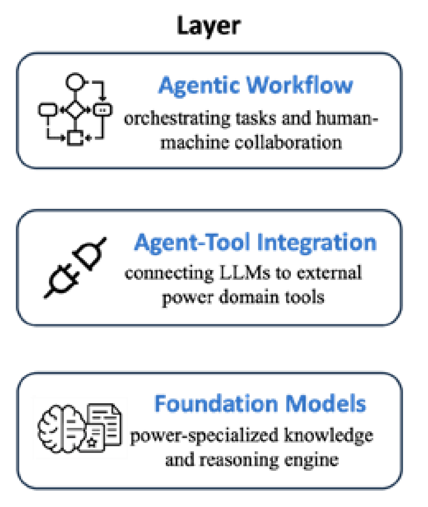
Original Harvard author roadmap: workflows, tool connections and foundation models. Three-layer excerpt.Full source credits and teaching detail
Full citation: Qian Zhang and Le Xie, PowerAgent: A Road Map Toward Agentic Intelligence in Power Systems: Foundation Model, Model Context Protocol, and Workflow, IEEE Power and Energy Magazine 23(5), 93–101, September–October 2025, DOI 10.1109/MPE.2025.3579718. A foundation model is a pretrained model intended for reuse across tasks. We verified the architecture through the authors’ full ERCOT presentation and official project page. The publisher/preprint download was unavailable, so we attribute no uninspected experimental results to the article. The community and repositories keep changing. Their current features are not a fixed 2025 benchmark. Le Xie; slides credit Le Xie and Qian Zhang; A Roadmap Towards Agentic Intelligence in Power Systems; Author presentation slide 11 Roadmap from the December2025 author presentation; not a measured deployment or a frozen specification of every current PowerAgent repository. Source locator: Author presentation slide 11; three layer panels in the left column. Original URL: https://www.ercot.com/files/docs/2025/12/01/4-Guest-Presentation-A-Roadmap-toward-Agentic-Intelligence-in-Power-Systems.pdf
[PA01] Qian Zhang, Le Xie. PowerAgent: A Road Map Toward Agentic Intelligence in Power Systems: Foundation Model, Model Context Protocol, and Workflow. IEEE Power and Energy Magazine, volume 23, issue 5, pages 93–101. September–October 2025 issue; TechRxiv preprint DOI version 1, June 2025. Read full source
[PA03] Le Xie; slides credit Le Xie and Qian Zhang. A Roadmap Towards Agentic Intelligence in Power Systems. ERCOT Technology and Security Committee guest presentation. 8 December 2025. Read full source
[PA02] Power and AI Initiative / PowerAgent community, Harvard SEAS. PowerAgent — Open-Source Agentic AI for Power Grids. Official Harvard project website. Live project page reviewed 17 October 2026. Read full source
[P01] Qian Zhang, Andrea Pomarico, Costas Mylonas, Magda Foti, Alberto Berizzi, Le Xie. PowerAgentBench-Dyn: A Benchmark for Agentic AI in Power System Dynamic Studies. arXiv. 2026-06-18 (v1). Read full source / Full paper
Slide 29. PowerAgent example: what changes when load is added?
00:51:30-00:53:30 / 2 minutes
Say: Consider a proposed load addition. The workflow analyzes an original case and a case with added load. It runs power flow and selected N minus one checks, which examine single-component outages. LangGraph coordinates the steps and saved results. PowerWorld performs the electrical calculation. That separation tells us what each component contributes: coordination, numerical analysis and evidence for comparing the cases. The maintained graph code uses StateGraph and ToolNode, but one repository does not establish the software choice for every PowerAgent project. The demonstrations provide a concrete workflow. They do not give a controlled estimate of utility time savings or operating reliability. We still need the cases, assumptions and comparison results.
Show / explain: Follow the source workflow from the load-growth request into base and changed-case studies. Point to the numerical comparison rather than treating the picture as an exact rendering of the current code.
Ask: What changes when we add load: the language model or the electrical study inputs?
Expected answer: The electrical inputs change. The workflow must run and compare the appropriate studies for those inputs.
Transition: Next, a disturbance-analysis paper shows why tool order matters.
Show this slide's source visual
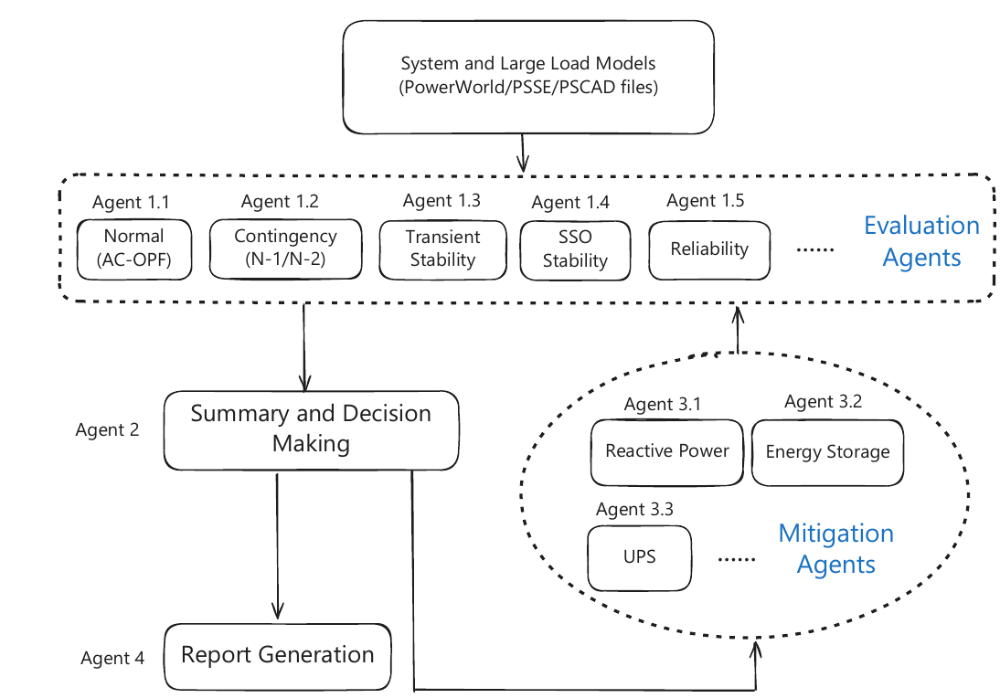
Original Harvard concept for grid-impact studies. The separate PowerWF example uses LangGraph and PowerWorld; this is not its exact graph.Full source credits and teaching detail
This is a specific current workflow maintained by the authors. It does not establish one SDK for the whole PowerAgent initiative. In the code, graph.py imports StateGraph and ToolNode, saves workflow flags and returns from the shared tools node to the relevant step. A bus is a connection point in the model. The author presentation discusses load-growth and data-center studies using power flow, congestion, voltage and N−1 checks, which examine single-component outages. The code and demonstrations show the workflow. They provide no controlled utility timing or reliability estimate. The reading guide links the exact source file. Le Xie; slides credit Le Xie and Qian Zhang; A Roadmap Towards Agentic Intelligence in Power Systems; Author presentation slide 14, right-hand grid-impact process A conceptual author demonstration. It is not an exact diagram of the later PowerWF graph.py or a utility performance trial. Source locator: Author presentation slide 14, right-hand grid-impact process. Original URL: https://www.ercot.com/files/docs/2025/12/01/4-Guest-Presentation-A-Roadmap-toward-Agentic-Intelligence-in-Power-Systems.pdf
[PA06] PowerAgent / PowerWF community contributors. PowerWF Grid Impact Evaluation — LangGraph workflow source. Author-maintained source code, Grid Impact Evaluation/src/agent/graph.py. Live source inspected 17 October 2026. Read full source
[PA03] Le Xie; slides credit Le Xie and Qian Zhang. A Roadmap Towards Agentic Intelligence in Power Systems. ERCOT Technology and Security Committee guest presentation. 8 December 2025. Read full source
[PA05] PowerAgent community contributors. Power-Agent/PowerWF. Author-maintained GitHub repository. Live source repository reviewed 17 October 2026. Read full source
Say: DrAgent studies recorded disturbances on transmission lines. First look at the waveform before discussing any AI component. The third current trace changes sharply during the fault. The marked locations identify inception, the highest current and clearance, when the fault ends. A tool can return a sample index or a current measurement. An engineering answer still needs to translate that output into the requested quantity and units. Locating a visible spike is a different question from interpreting its physical cause or assessing equipment. The figure is an original research record, rather than an invented control-room event. We will next connect the waveform questions to the tools that answer them.
Show / explain: Locate the third trace. Point to the start, peak and clearance markers in that order. Explain that the horizontal position represents time or sample location and the vertical value represents current.
Ask: Would the highest current sample alone tell us the fault duration?
Expected answer: No. Duration needs a start and an end, with the appropriate timing information.
Transition: The architecture assigns those subtasks to particular tools.
Show this slide's source visual
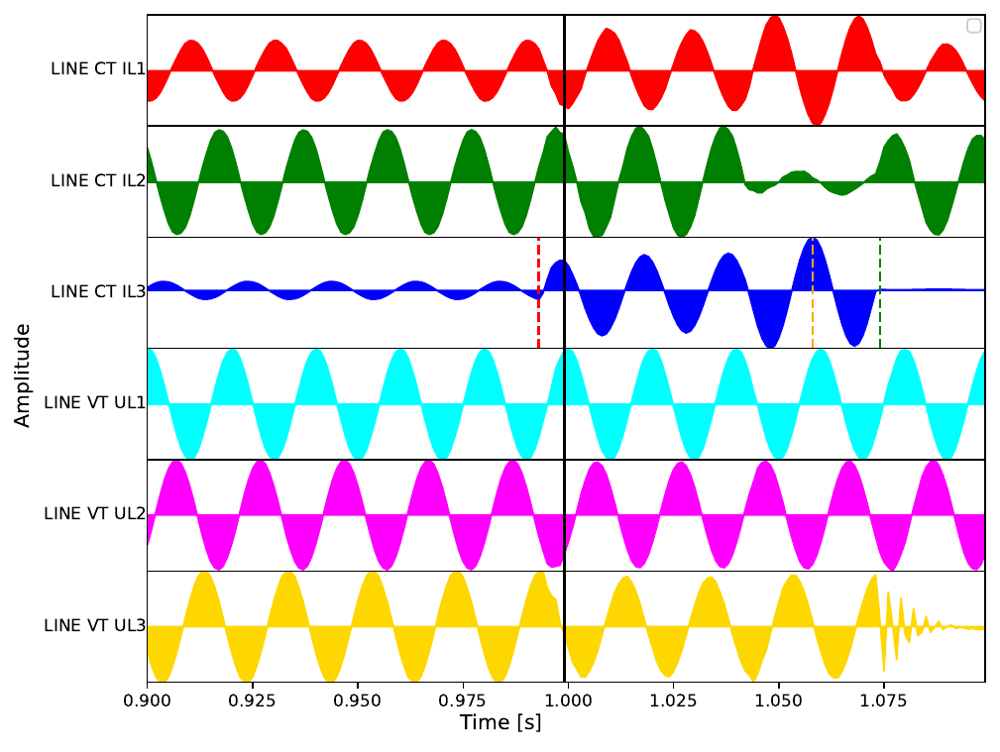
Original DrAgent Figure 2, PDF p.4. The third current channel shows a fault in a sample disturbance record.Full source credits and teaching detail
The Hitachi Energy paper studies disturbance analysis on transmission lines. This is an original figure extracted from the research paper, not an invented event or a live operating screen. First identify how the curve changes. Numerical tools return a sample index or current measurement. The task still requires an engineering interpretation of those values.
[D01] Barun Kumar Saha, Aarthi V, O. D. Naidu. DrAgent: An Agentic Approach to Fault Analysis in Power Grids Using Large Language Models. 2025 International Conference on Artificial Intelligence in Information and Communication (ICAIIC), pp. 938–945. 2025-02-18–21. Read full source
Slide 31. DrAgent selects tools to answer a fault question
00:55:30-00:57:30 / 2 minutes
Say: DrAgent uses a ReWOO-based plan to choose domain functions and document search. ReWOO plans tool work using references to results that earlier steps will produce. In this implementation, Gemini 1.5 Pro plans, about a dozen domain functions analyze signals, and retrieval searches 138 product manuals. Recorded disturbance files use the COMTRADE format. Notice the two different evidence paths. Signal functions measure the event, while manual search supplies product information. A question about a fault's start time may need its sample index and the recording's sampling rate before conversion to seconds. That requirement is a dependency between calculations, which gives us a reason to introduce task graphs.
Show / explain: Follow the planning stage into signal analysis and manual search, then back into the response. Explain RAG as finding relevant source passages for the model.
Ask: Which two inputs are needed to turn a sample index into a time offset?
Expected answer: The index under the tool's indexing convention and the sampling rate. A record start time is also needed for an absolute timestamp.
Transition: Before graph design, inspect what this tool-based approach achieved.
Show this slide's source visual
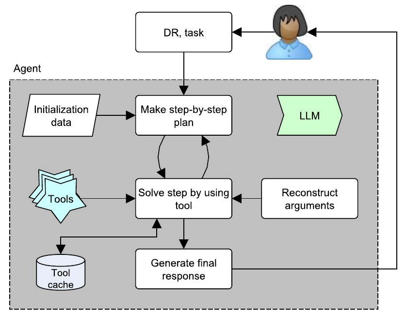
Original DrAgent architecture: planning, tool execution and answer generation.Full source credits and teaching detail
ReWOO plans the work before running tools that use earlier results. COMTRADE is a format for recorded power-system disturbances. The implementation uses Gemini 1.5Pro for planning, a dozen domain functions and retrieval-augmented generation (RAG) over 138 product manuals. RAG retrieves relevant source text for the model. The displayed picture is the paper’s original architecture. The following dependency example is a spoken teaching example. To convert a fault’s starting sample to seconds, the system first needs both the sample index and sampling rate. This dependency motivates the next graph explanation. Barun Kumar Saha, Aarthi V, O. D. Naidu; DrAgent: An Agentic Approach to Fault Analysis in Power Grids Using Large Language Models; Figure 1, PDF page 2 Paper architecture based on ReWOO; the picture does not establish utility deployment or autonomous command authority. Source locator: Figure 1, PDF page 2. Original URL: https://www.manuscriptlink.com/society/kics/media?key=kics%2Fconference%2Ficaiic2025%2Fpresentation%2F1571098105.pdf
[D01] Barun Kumar Saha, Aarthi V, O. D. Naidu. DrAgent: An Agentic Approach to Fault Analysis in Power Grids Using Large Language Models. 2025 International Conference on Artificial Intelligence in Information and Communication (ICAIIC), pp. 938–945. 2025-02-18–21. Read full source
[LG01] LangChain documentation maintainers. LangGraph Graph API overview. Official LangChain documentation. Accessed 2026-10-17; live documentation. Read full source
Slide 32. DrAgent: more correct answers, with errors still present
00:57:30-00:59:30 / 2 minutes
Say: The chart reconstructs correct-answer counts from the paper's individual score cells. Across 18 recorded cases, fault-inception answers increase from 12 to 18, and maximum-current answers from 16 to 18. The timing category increases from four to 13. Here we count scores of two or above as correct under the authors' rubric. The timing category also accepts a correctly labeled duration, so it is broader than exact clearance timestamps. A domain expert graded the answers using the paper's tolerances of three milliseconds for timing and five percent for current. These are author-data-derived counts, rather than a new experiment. They show useful gains on this task while leaving errors and a small test population.
Show / explain: Read the denominator before the bars. Compare the timing bars last, then identify the remaining five cases. Mention the audited counts rather than the inconsistent printed Q6 mean.
Ask: Does 18 out of 18 establish general fault-analysis reliability?
Expected answer: No. It describes the tested records and grading rule. Other records and tasks remain to be evaluated.
Transition: The tool sequence becomes clearer once we distinguish three kinds of graph.
Show this slide's source visual
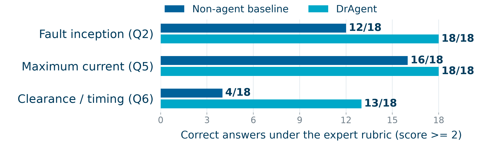
Counts reconstructed from Table IV and the Appendix. They are neither new experiments nor the paper’s mean-score measure.Full source credits and teaching detail
Fault inception: baseline 12/18, agent 18/18. Maximum current: baseline 16/18, agent 18/18. Clearance/timing: baseline 4/18, agent 13/18. The paper allows 3 ms timing error and 5% current error. One expert graded the answers. Q6 footnote 8 accepts a correctly labeled duration, so these are not strictly clearance-timestamp accuracy counts. The printed Q6 mean conflicts with the individual cells. This chart therefore uses the audited cell counts.
[D01] Barun Kumar Saha, Aarthi V, O. D. Naidu. DrAgent: An Agentic Approach to Fault Analysis in Power Grids Using Large Language Models. 2025 International Conference on Artificial Intelligence in Information and Communication (ICAIIC), pp. 938–945. 2025-02-18–21. Read full source
Slide 33. Three kinds of graph have different jobs
00:59:30-01:01:30 / 2 minutes
Say: The first graph is the electrical network. Its edges represent physical connections between modeled components. The second is a task dependency graph. Its edges say which calculation needs an earlier result. The third is an execution workflow. Its edges determine which software step can run next, and it may contain retry loops. These are different objects. A radial feeder can have a tree-like electrical shape while its software repeatedly revisits a diagnostic step. A calculation DAG can analyze a meshed electrical network. When someone says a node or a loop, ask which graph they mean. This prevents a software architecture picture from being mistaken for the grid model.
Show / explain: Compare the three panels. Name one node and the meaning of one edge in each. Point out the loop in the workflow and its absence from the task DAG.
Ask: Does a loop in the software imply that the electrical feeder is meshed?
Expected answer: No. Software execution and electrical connectivity are separate structures.
Transition: Now use the fault example to read an actual dependency graph.
Show this slide's source visual
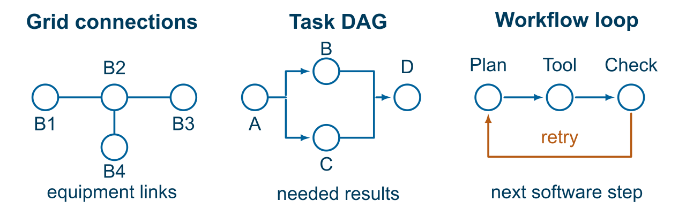
Three different meanings of “graph.” These small examples explain connections, not calculated electrical results.Full source credits and teaching detail
A radial feeder has a tree-like electrical layout, but its software can still contain loops. A calculation graph without loops can analyze a meshed electrical network. State which graph you mean before discussing a node, connection or loop. A software architecture drawing is not the electrical model.
[D01] Barun Kumar Saha, Aarthi V, O. D. Naidu. DrAgent: An Agentic Approach to Fault Analysis in Power Grids Using Large Language Models. 2025 International Conference on Artificial Intelligence in Information and Communication (ICAIIC), pp. 938–945. 2025-02-18–21. Read full source
[P03] D. Adrian Maldonado, Jonghwan Kwon, Sunash B. Sharma, Hongwei Jin, Stefano Fenu, Emil Constantinescu, David Sehloff, Parfait Gasana, Duane Rudolph Verner, Kibaek Kim. GridMind: An Agentic Workflow for Weather-Driven Power Grid Risk Assessment. KDD 2026 Workshop on Scientific and Societal Agents / OpenReview. August 2026 workshop; reviewed 17 October 2026. Read full source / Full paper
[LG01] LangChain documentation maintainers. LangGraph Graph API overview. Official LangChain documentation. Accessed 2026-10-17; live documentation. Read full source
Slide 34. A DAG shows which result must come first
01:01:30-01:03:30 / 2 minutes
Say: A directed acyclic graph, or DAG, connects tasks without forming a directed loop. An arrow means the downstream calculation needs the upstream result. To convert a fault-start sample into a time, we first need the sample index and the sampling rate. A peak-current calculation may run independently when it uses the same unchanged record and does not need the timing result. A valid execution order respects every required dependency. The page position of a box does not determine its order. Before reporting, the application must wait for all required outputs or clearly identify what is missing. This is a practical way to reason about both correctness and possible parallel work.
Show / explain: Trace both arrows into the time conversion. Then follow the separate peak-current branch. Ask learners to identify a valid order without relying on left-to-right box placement.
Ask: Can the time conversion run as soon as the sample index arrives?
Expected answer: Only if the required sampling-rate information is already available and matches the same record.
Transition: LangGraph manages execution, which can include more than an acyclic task plan.
Show this slide's source visual
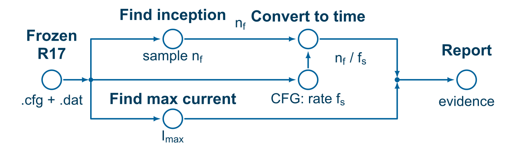
Original teaching adaptation of DrAgent’s tool dependencies, rather than its exact execution graph.Full source credits and teaching detail
Every task must follow the tasks that produce its inputs. This is a valid topological order. Fault-start sample and sampling rate must both exist before the time conversion runs. Finding maximum current can run independently of that conversion when both use the same unchanged record. Dependencies determine which tasks can run together. The positions of boxes in a drawing do not.
[D01] Barun Kumar Saha, Aarthi V, O. D. Naidu. DrAgent: An Agentic Approach to Fault Analysis in Power Grids Using Large Language Models. 2025 International Conference on Artificial Intelligence in Information and Communication (ICAIIC), pp. 938–945. 2025-02-18–21. Read full source
Say: LangGraph is software for defining state and running workflow nodes with edges and routing rules. A node can call fixed code, a simulator or an LLM. Unlike a DAG, the execution can revisit a step. A debugger can pause the graph so a developer can inspect progress. That static breakpoint differs from a dynamic interrupt that requests external input. StateGraph defines stored fields, while application reducers determine how parallel updates combine. Those facilities help implement a process. The application still defines data validation, engineering tests, permissions and stopping conditions. Executing the graph successfully cannot establish that the electrical model or the chosen study is valid.
Show / explain: Explain the highlighted debug pause as a developer inspection point. Use a short run-check-repair example to describe a loop, then distinguish it from human review.
Ask: Does using LangGraph automatically add a power-system feasibility check?
Expected answer: No. The application must call and interpret the appropriate engineering tools and enforce the requirements.
Transition: Those tools produce evidence that the workflow must keep identifiable.
Show this slide's source visual
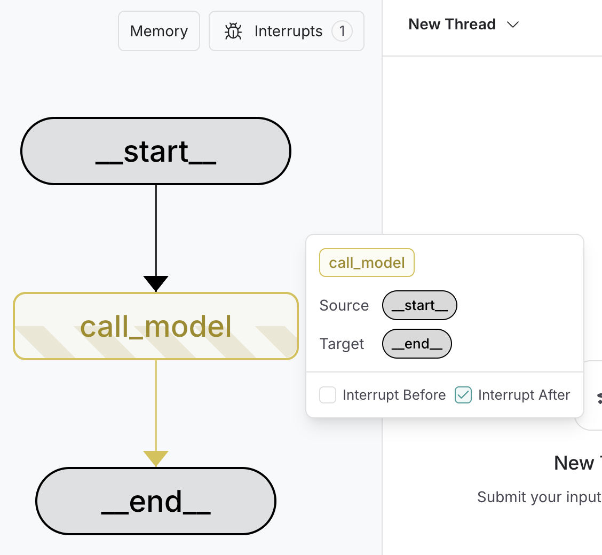
Real LangGraph debugger screenshot. A paused run can be inspected before the next software step.Full source credits and teaching detail
LangGraph is software for running workflows. It can support loops, unlike a DAG. StateGraph defines stored state fields and workflow nodes. Application-defined reducers specify how updates from parallel steps combine. A node may call an engineering tool with fixed rules or an AI model. The application must define validation, stopping and permissions. Running the graph does not prove that an electrical solution is feasible. Source: LangChain documentation maintainers, official LangGraph documentation. Accessed October 18, 2026. A static debug breakpoint differs from a dynamic interrupt requesting human input. Source figure locator: Debugging with interrupts. Original source URL: https://docs.langchain.com/oss/python/langgraph/interrupts
[LG01] LangChain documentation maintainers. LangGraph Graph API overview. Official LangChain documentation. Accessed 2026-10-17; live documentation. Read full source
[D01] Barun Kumar Saha, Aarthi V, O. D. Naidu. DrAgent: An Agentic Approach to Fault Analysis in Power Grids Using Large Language Models. 2025 International Conference on Artificial Intelligence in Information and Communication (ICAIIC), pp. 938–945. 2025-02-18–21. Read full source
[P03] D. Adrian Maldonado, Jonghwan Kwon, Sunash B. Sharma, Hongwei Jin, Stefano Fenu, Emil Constantinescu, David Sehloff, Parfait Gasana, Duane Rudolph Verner, Kibaek Kim. GridMind: An Agentic Workflow for Weather-Driven Power Grid Risk Assessment. KDD 2026 Workshop on Scientific and Societal Agents / OpenReview. August 2026 workshop; reviewed 17 October 2026. Read full source / Full paper
[LG03] LangChain documentation maintainers. LangGraph Interrupts. Official LangChain documentation. Accessed 2026-10-17; live documentation. Read full source
Slide 36. Saved state must identify the study and its evidence
01:05:30-01:07:30 / 2 minutes
Say: Saved state should identify the study, its input versions, results, status and attempt count. Suppose a set of parallel outage studies expects a case called outage_34. The application needs to notice if that result is missing or appears twice. A generic state store does not automatically understand that engineering requirement. Reducers or an external evidence store must preserve the case identities and combine updates correctly. A list of three completed steps is insufficient if the requested set contained four cases. Save enough information to compare the expected set with the returned evidence. That makes both missing coverage and inappropriate reuse easier to detect.
Show / explain: Read the figure as generic software state. Describe expected-case and returned-case sets verbally. Make clear that those grid-specific fields are tutorial design requirements.
Ask: What should the report do when one required outage result is absent?
Expected answer: Name the missing case and retain an incomplete or unresolved status for conclusions that depend on it.
Transition: Saved progress also allows a run to pause and resume.
Show this slide's source visual
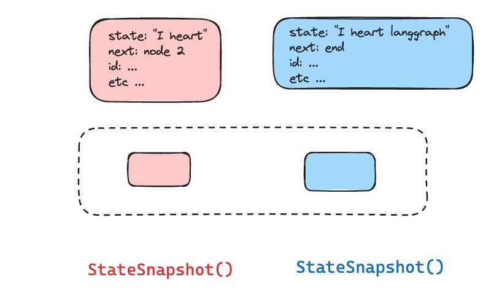
Original LangGraph state diagram. Software checkpoints still need grid-case, time and evidence identifiers.Full source credits and teaching detail
The published figure shows generic LangGraph software state. For a spoken grid-study example, imagine an application-specific expected-case set that includes outage_34 while the returned evidence lacks that case. Those case fields are tutorial requirements, not a built-in LangGraph power-system schema. Default update behavior does not guarantee that all branch results survive a merge. Define and test the reducer, or an external evidence store, to preserve case IDs and detect duplicates or missing outputs. Source: LangChain documentation maintainers, official LangGraph documentation. Accessed October 18, 2026. The extra grid identifiers are tutorial requirements; they are not fields proven by this generic illustration. Source figure locator: Get state history. Original source URL: https://docs.langchain.com/oss/python/langgraph/checkpointers
[LG01] LangChain documentation maintainers. LangGraph Graph API overview. Official LangChain documentation. Accessed 2026-10-17; live documentation. Read full source
[LG02] LangChain documentation maintainers. LangGraph Persistence. Official LangChain documentation. Accessed 2026-10-17; live documentation. Read full source
[LG05] LangChain documentation maintainers. Checkpointers. Docs by LangChain, Python LangGraph documentation. Undated live documentation; accessed October 18, 2026. Read full source
Slide 37. A checkpoint lets a workflow pause and resume
01:07:30-01:09:30 / 2 minutes
Say: A checkpoint records workflow progress. A thread identifier links saved steps to the same run so execution can resume later. However, external conditions may change during a pause. A saved voltage result may no longer match the current topology. The application must revalidate the snapshot and rerun affected work. There is another software detail to consider: the interrupted node may restart from its beginning. Actions before the pause may therefore run again. Stable step IDs or idempotency controls can prevent a repeated request from applying the same change twice. Saving and resuming software state solves a coordination problem. It does not keep the external grid state frozen.
Show / explain: Follow the checkpoint sequence across the pause. Ask what could change outside the software before resumption. Explain idempotency as safely recognizing a repeated operation.
Ask: Can resuming a saved thread justify reusing every old numerical result?
Expected answer: No. Reuse depends on whether each result's relevant inputs still match.
Transition: The same identity checks matter when several studies run together.
Show this slide's source visual
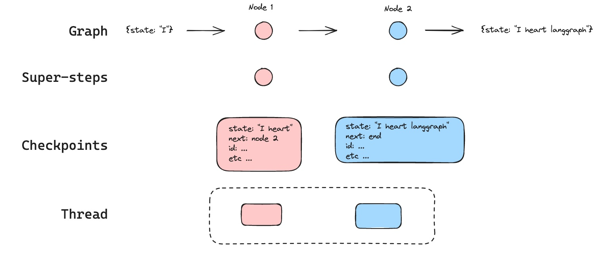
Original LangGraph checkpoint diagram. Saving progress does not prove that the grid data still match.Full source credits and teaching detail
An interrupt can pause for outside review and later resume in the same thread. Current LangGraph documentation says the interrupted node restarts from its beginning. Actions before the interrupt can therefore happen again. Use stable step IDs or other idempotency controls, which prevent repeated execution from applying the same change twice. This example grants no permission to command live grid equipment. Source: LangChain documentation maintainers, official LangGraph documentation. Accessed October 18, 2026. Saved software state does not prove that an external grid snapshot remains current. Source figure locator: Opening checkpoint illustration. Original source URL: https://docs.langchain.com/oss/python/langgraph/checkpointers
[LG02] LangChain documentation maintainers. LangGraph Persistence. Official LangChain documentation. Accessed 2026-10-17; live documentation. Read full source
[LG03] LangChain documentation maintainers. LangGraph Interrupts. Official LangChain documentation. Accessed 2026-10-17; live documentation. Read full source
[LG05] LangChain documentation maintainers. Checkpointers. Docs by LangChain, Python LangGraph documentation. Undated live documentation; accessed October 18, 2026. Read full source
Slide 38. Parallel outage studies must account for every case
01:09:30-01:11:30 / 2 minutes
Say: Parallel studies can reduce waiting when the cases are independent. Each selected outage should run on a consistent copy of the same starting case. Afterward, the application must compare the expected case IDs with the returned results. A failed or missing branch remains unresolved. An aggregator that summarizes only successful branches can produce an attractive but incomplete report. If a case called C2 fails, the report should identify C2, its error and the conclusions that cannot yet be drawn. Even completing every selected case does not imply that the selected set covers every relevant single-component outage. Coverage has to match the original assignment.
Show / explain: Trace the generic fan-out and fan-in figure. Verbally remove one branch result and ask what the aggregator must preserve rather than summarize away.
Ask: If two out of three required studies finish, can the report declare all selected outages acceptable?
Expected answer: No. It can report those two results while explicitly leaving the third case and affected conclusions unresolved.
Transition: PowerDAG addresses a related problem: calling a tool before its prerequisites exist.
Show this slide's source visual
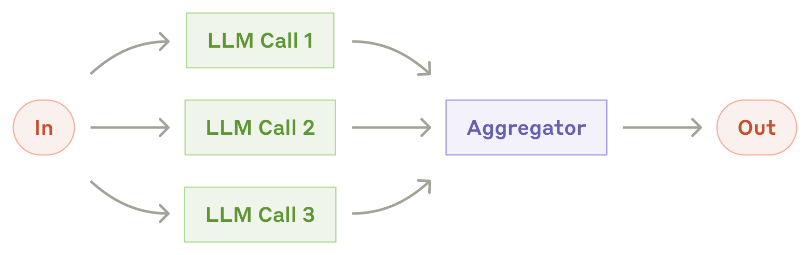
Original Anthropic parallel workflow. A grid study must also account for missing or failed outage cases.Full source credits and teaching detail
Independent outage studies should use the same frozen starting case. Collect results by outage ID, compare the returned IDs with the requested set, and preserve failed or missing studies as unresolved. The original parallel-workflow figure illustrates coordination; it does not establish complete electrical coverage.
[R01] Samim Konjicija, Slaven Peles. Integrating Agentic Artificial Intelligence with High-Performance Computing for Grid Planning. arXiv; EnergyCon 2026 proceedings forthcoming as described by authors. 3 September 2026; v1. Read full source / Full paper
[LG01] LangChain documentation maintainers. LangGraph Graph API overview. Official LangChain documentation. Accessed 2026-10-17; live documentation. Read full source
[DEF03] Erik S. and Barry Zhang. Building effective agents. Anthropic Engineering, December 19, 2024. Live article reviewed October 17, 2026. Read full source
Slide 39. PowerDAG checks the steps needed before a tool runs
01:11:30-01:13:30 / 2 minutes
Say: PowerDAG retrieves relevant verified workflow examples and uses a dependency graph with a supervisory gate. The gate checks required earlier tool calls before allowing another tool to run. The inspected version four covers 108 tools, ten task families and four Vermont feeder models. Those are distribution networks: Rochester, Stowe, Glover and South Hero. The agent still chooses steps, while the supervisor constrains their order. This combines flexible selection with explicit workflow rules. The exact gate matters. In this paper it checks encoded prior Write-tool names. That is narrower than checking every parameter, input version or physical consequence. We should explain the gate's actual guarantee before interpreting its benchmark result.
Show / explain: Follow the agent's proposed call through the supervisor and into the environment. Show where retrieval supplies examples and where the prerequisite check occurs.
Ask: Can a prerequisite-name gate alone prove that a result uses the current topology?
Expected answer: No. Freshness and parameter consistency need additional checks that identify the actual inputs and outputs.
Transition: The voltage example makes that boundary concrete.
Show this slide's source visual
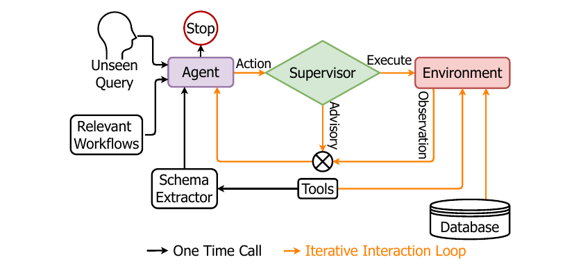
Original PowerDAG v4 architecture, including the supervisor before environment execution.Full source credits and teaching detail
Use the inspected v4 dated 5 July 2026: Emmanuel O. Badmus and Amritanshu Pandey, PowerDAG: Supervisory Agentic AI System for Automating Distribution Grid Analysis. Earlier versions have different titles and performance headlines. Its four network models are Rochester, Stowe, Glover and South Hero. The graph identifies required earlier tools and gates calls while the agent continues choosing steps. A tool can run successfully in the wrong study state if earlier work is missing. The gate addresses that workflow problem. Emmanuel O. Badmus, Amritanshu Pandey; PowerDAG: Supervisory Agentic AI System for Automating Distribution Grid Analysis; Figure 2, v4 PDF page 3 This is the v4 research architecture. Formal supervision checks encoded prior Write-tool names; it does not establish all freshness, parameter or physical-safety checks. Source locator: Figure 2, v4 PDF page 3. Original URL: https://arxiv.org/pdf/2603.17418v4
[PD01] Emmanuel O. Badmus, Amritanshu Pandey. PowerDAG: Supervisory Agentic AI System for Automating Distribution Grid Analysis. arXiv preprint, version 4. 5 July 2026 (v4); first submitted 18 March 2026. Read full source
[PD02] Emmanuel O. Badmus and contributors. DistGrid-AgentBench: A Distribution Grid Benchmark for Agentic AI. Author-maintained GitHub repository. Live repository reviewed 17 October 2026. Read full source
Slide 40. PowerDAG: solve the grid before checking its voltage
01:13:30-01:15:30 / 2 minutes
Say: A voltage-violation check needs a solved network state. If the required earlier solver step is missing, the gate rejects the call and explains what needs to happen first. That prevents one important class of workflow error. Now ask a second question: did that solve use the current network? The paper's check of executed tool names does not by itself establish freshness. Our teaching diagram adds a current-v43 condition to show the stronger requirement an application may need. It is labeled as an adaptation. Passing a dependency gate therefore means the encoded prerequisites passed. The numerical solution and the resulting engineering conclusion still require their own checks.
Show / explain: Read the missing-prerequisite path first, then the permitted path. Point explicitly to the added v43 freshness condition so learners do not attribute it to the paper's original gate.
Ask: If solve appears in the history, what else would you want before checking voltage?
Expected answer: Evidence that the solve used the required case and current inputs, returned an appropriate status and produced the needed results.
Transition: Now interpret the controlled benchmark without enlarging that guarantee.
Show this slide's source visual
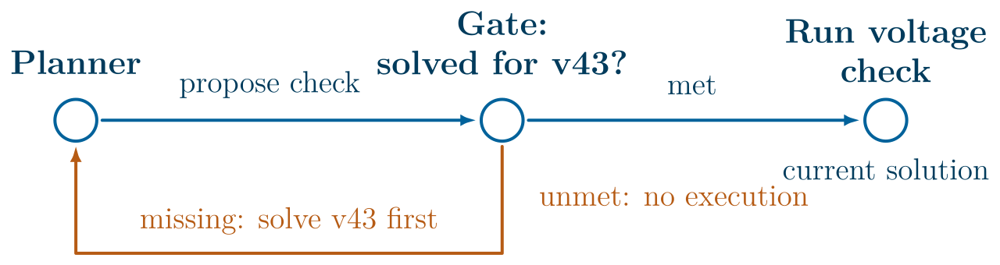
Teaching adaptation: the current-v43 check adds a freshness rule. The paper’s gate checks which required tools have already run.Full source credits and teaching detail
Section IV-C uses voltage-violation checks to explain these requirements. Equation 9 checks whether required Write-tool names appear among executed tool names. That alone does not check whether their outputs match the current grid version. The diagram adds current-v43 freshness as a teaching condition. The introduction also explains how missing a network update can leave a solver using the wrong state. Appendix B reports this Stowe execution order: load_load, load_solar, load_distribution_network, create_and_initialize_model, build_constraints, build_objective, solve, update_network_voltages and plot_network_data. This is a reported order, not a claimed minimal set of dependency links. The authors curate the rules. Tools without rules remain executable. Passing the gate does not prove numerical feasibility or safety.
[PD01] Emmanuel O. Badmus, Amritanshu Pandey. PowerDAG: Supervisory Agentic AI System for Automating Distribution Grid Analysis. arXiv preprint, version 4. 5 July 2026 (v4); first submitted 18 March 2026. Read full source
Slide 41. PowerDAG results: the same queries, four setups
01:15:30-01:17:30 / 2 minutes
Say: This comparison uses the same GPT-5.5 model and 150 test queries in each setup. The reported first-run workflow success is 77.33 percent for ReAct, 92.67 for retrieval only, 96 for just-in-time supervision only and 98 for full PowerDAG. Pass at one checks required tool coverage, compatible inputs and ordering against expert workflows. Each query runs once in each setup. These held-out queries still come from the same ten task families. The comparison supports the value of these complete configurations on that benchmark. It does not measure reliability of live commands or isolate the effect of one graph edge. Keep the model, task population and score definition attached to the headline.
Show / explain: Read the same-model label and denominator before comparing bars. Explain retrieval only and supervision only as separate tested setups. Finish by defining what the 98 percent actually measures.
Ask: Does 98 percent workflow Pass@1 mean a 98 percent chance of safe field operation?
Expected answer: No. It measures the specified first-run workflow criteria on the benchmark queries.
Transition: Reproducibility also depends on what the public release contains.
Show this slide's source visual
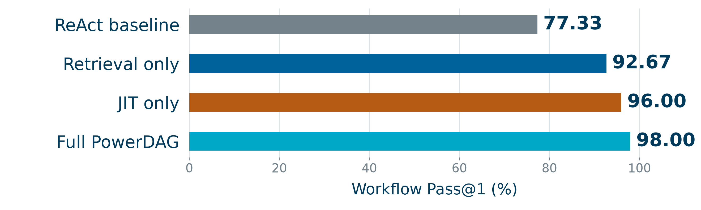
PowerDAG v4, Table II. ReAct: a reason-and-act loop. JIT: prerequisite checks just before a call.Full source credits and teaching detail
The reported Pass@1 scores are ReAct 77.33%, retrieval-only PowerChain-AR 92.67%, JIT supervision only 96.00%, and full PowerDAG 98.00%. Each setup runs 150 queries. Across the full study, six setups and ten model backends produce 9,000 query runs. Full PowerDAG scores 97.33% with Gemini 3.1 Pro and 92.67% with Qwen 3.6-27B. Pass@1 is an automated check against expert workflows. The test queries were kept out of the example set, but they use the same ten task families; this is a within-family test. These scores do not measure outage avoidance or the reliability of live commands. The comparison tests complete setups as built. It does not isolate the effect of one graph edge.
[PD01] Emmanuel O. Badmus, Amritanshu Pandey. PowerDAG: Supervisory Agentic AI System for Automating Distribution Grid Analysis. arXiv preprint, version 4. 5 July 2026 (v4); first submitted 18 March 2026. Read full source
Slide 42. PowerDAG: what can others check and reuse?
01:17:30-01:19:30 / 2 minutes
Say: The PowerDAG public benchmark provides tasks, tool descriptions, workflow records and scoring code. That allows others to inspect the study design and some of the execution evidence. The release has a practical boundary: BESS, basicPV and GFI can run from the public files, while seven other task families need private feeder maps, geographic data and network-tool code. Public records are therefore useful without making the entire study independently runnable from the download. When reusing the idea, we can adopt explicit prerequisite checks and then test them against our own tools and state rules. We should not assume that a published gate automatically transfers unchanged to a different utility environment.
Show / explain: Count the three public task families and the seven with external dependencies verbally. Point learners to the linked paper and repository rather than promising a one-click full reproduction.
Ask: What can we reuse even when every dataset is unavailable?
Expected answer: The design idea, task and tool descriptions, available workflow evidence and scoring approach, followed by new validation for the intended environment.
Transition: Another paper focuses on generating and repairing simulation code.
Full source credits and teaching detail
The author README names BESS, basicPV and GFI as the three task groups that can run from the public download. The other seven need private feeder data, geographic data (GIS) and network-tool code. Public workflow records let readers inspect the work, but do not make every experiment reproducible from the public files alone. This is a distribution-study research benchmark using real feeder models. It does not show a named utility running PowerDAG in a control room. Keep the task population and score definition with every reported percentage.
[PD02] Emmanuel O. Badmus and contributors. DistGrid-AgentBench: A Distribution Grid Benchmark for Agentic AI. Author-maintained GitHub repository. Live repository reviewed 17 October 2026. Read full source
[PD01] Emmanuel O. Badmus, Amritanshu Pandey. PowerDAG: Supervisory Agentic AI System for Automating Distribution Grid Analysis. arXiv preprint, version 4. 5 July 2026 (v4); first submitted 18 March 2026. Read full source
Slide 43. Simulation agents find functions, run code and repair errors
01:19:30-01:21:30 / 2 minutes
Say: The feedback-driven simulation framework finds relevant MATLAB functions and settings, writes code and runs it. Tool errors return feedback that can guide repair. The study uses DALINE and MATPOWER tasks. This illustrates a real agentic role: selecting and correcting the steps needed to complete a simulation request. However, a program can run without matching the requested engineering settings. We must compare the executed study with the assignment, including required variables and unnecessary changes. A successful software exit is one layer of evidence. Numerical and task-level checks are additional layers. The paper does not identify LangGraph, so we should describe its workflow without assigning an unreported software framework.
Show / explain: Follow the source feedback path from generated code to execution and back to repair. Give an example of code running with the wrong setting and ask where that error would be detected.
Ask: Is no MATLAB error a sufficient success criterion?
Expected answer: No. The study and settings must also satisfy the requested engineering task.
Transition: The scoring rule in this paper makes that distinction particularly important.
Show this slide's source visual
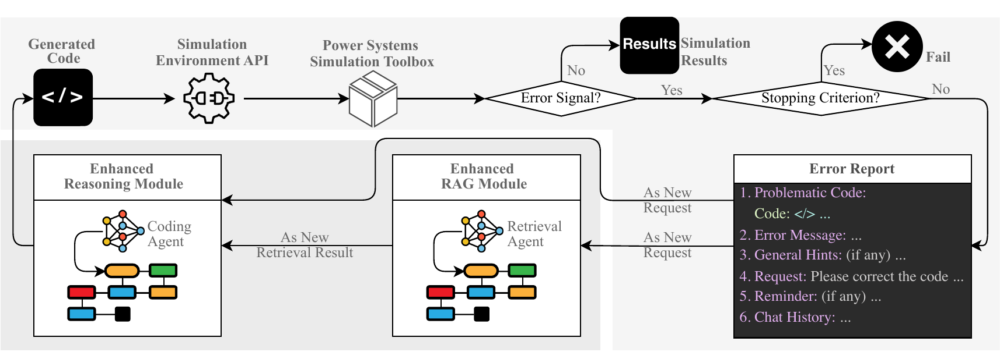
Original environmental acting module: simulation errors feed retrieval and code repair.Full source credits and teaching detail
Jia, Cui and Hug test DALINE and MATPOWER simulation tasks. The paper does not identify LangGraph as its software framework. Its run-and-repair loop is an example of using feedback. The engineering check must compare the actual study and settings with the requested task. A MATLAB run without an error is not enough. Mengshuo Jia, Zeyu Cui, Gabriela Hug; Enhancing LLMs for Power System Simulations: A Feedback-Driven Multi-Agent Framework; Figure 5, author-preprint PDF page 7 Published workflow module, not evidence that error-free execution satisfies the requested engineering settings. Source locator: Figure 5, author-preprint PDF page 7. Original URL: https://doi.org/10.1109/TSG.2025.3589114
[E02] Mengshuo Jia, Zeyu Cui, Gabriela Hug. Enhancing LLMs for Power System Simulations: A Feedback-Driven Multi-Agent Framework. IEEE Transactions on Smart Grid, volume 16, issue 6, pages 5556–5572. Published online 2025-07-18; issue November 2025; inspected full arXiv v3 dated 2025-05-19. Read full source / Full paper
Slide 44. Simulation-agent results: points, not a pass rate
01:21:30-01:23:30 / 2 minutes
Say: For 34 DALINE tasks, each graded attempt receives 100 points if it meets every requirement without extra settings, 50 if unnecessary settings remain and zero if a requirement is missed. The score averages allowed attempt slots, carrying the final score into unused slots. The full setup reports 93.13 on this scale. It is not a statement that 93.13 percent of tasks passed. Other shown setups score zero, 31.37 and 33.82. These compare complete systems with different retrieval and feedback arrangements, including a separate ChatGPT product setup. The related MATPOWER test reports 96.85 over 35 tasks with up to five attempts. Always explain the score before comparing its height.
Show / explain: Read the horizontal-axis metric and the 100/50/0 rubric aloud. Compare the full setup with the others only after explaining the attempt averaging.
Ask: Can we multiply 34 tasks by 93.13 percent to recover a number of successful tasks?
Expected answer: No. The graded attempt-averaged score is not a completion fraction.
Transition: Repeated feedback can help, but it can also preserve a software mistake.
Show this slide's source visual
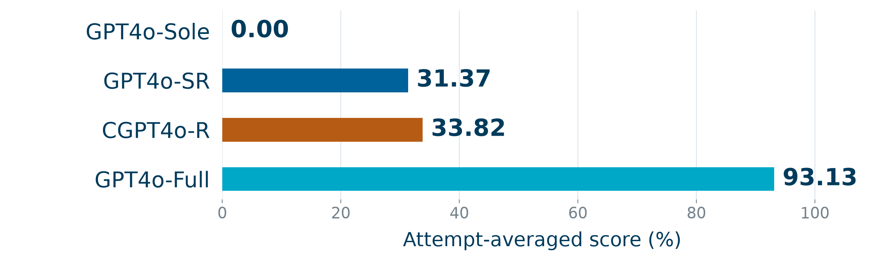
DALINE comparison reported in the author preprint, Figure 8 / section V. Each task allows up to three attempts.Full source credits and teaching detail
Each attempt scores 100 when it meets every requirement without extra settings, 50 when unnecessary settings remain, and 0 when a requirement is missed. The score averages the allowed attempt slots. If attempts are unused, the last score fills those slots. The API setups use gpt-4o-2024-05-13. The built-in ChatGPT-RAG setup runs in a different product. These are comparisons of complete systems, so they do not isolate the effect of one feature. In the related MATPOWER test, the full setup scores 96.85 over 35 tasks with up to five attempts per task.
[E02] Mengshuo Jia, Zeyu Cui, Gabriela Hug. Enhancing LLMs for Power System Simulations: A Feedback-Driven Multi-Agent Framework. IEEE Transactions on Smart Grid, volume 16, issue 6, pages 5556–5572. Published online 2025-07-18; issue November 2025; inspected full arXiv v3 dated 2025-05-19. Read full source / Full paper
Slide 45. Trying again can repeat the same software error
01:23:30-01:26:00 / 2.5 minutes
Say: A capability study found an error involving a 100 megawatt and 10 megavar load request. The agent request omitted reactive load, and the cache key omitted it as well. Correcting the request still returned the old result because the cache could not distinguish the corrected input. A cache stores earlier results for reuse. Its key must include the inputs that determine whether reuse is valid. In this case, trying again with better wording cannot repair the underlying key. The lesson extends to model revisions, topology and other relevant settings. Agent evaluation needs to test adapters and caching behavior as well as model responses. A fluent explanation can repeatedly describe the same stale calculation.
Show / explain: Use the evaluator loop as a generic feedback picture. Narrate the original request, corrected request and unchanged cache result. Ask which software component must change.
Ask: Why did correcting the prompt fail to obtain a fresh result?
Expected answer: The cache key ignored a result-changing input. The adapter and cache needed correction, not another verbal retry.
Transition: Let us make these loops visible in two official platform demonstrations.
Show this slide's source visual
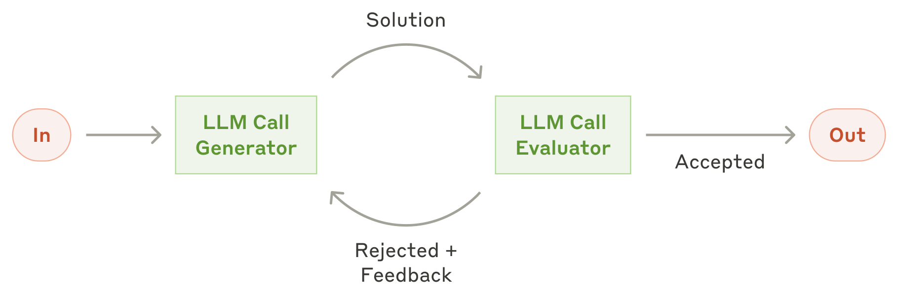
Original Anthropic feedback pattern. A retry must actually use the repaired code and changed inputs.Full source credits and teaching detail
The paper asks for a load of 100 MW and 10 Mvar. The Mvar part is reactive load; leaving it out changes the study. A cache stores past results for reuse. Its key tells the software which inputs produced a result. If the key ignores reactive load, a corrected request can still return the old result. Asking the model to try harder will not fix that software error. Test the tool adapter and cache. The key must include every input that can affect the result, including relevant model and topology versions. Source: Anthropic, Building effective agents (December 19, 2024). An LLM evaluator does not prove grid feasibility, permission or fresh input data. Source figure locator: Workflow: Evaluator-optimizer. Original source URL: https://www.anthropic.com/engineering/building-effective-agents
[R02] Eve Tsybina, Samim Konjicija, Slaven Peles. Agentic Artificial Intelligence for Power Systems: Strategies to Identify and Close Capability Gaps. arXiv. 30 July 2026; v1. Read full source / Full paper
[DEF03] Erik S. and Barry Zhang. Building effective agents. Anthropic Engineering, December 19, 2024. Live article reviewed October 17, 2026. Read full source
Slide 46. LangGraph Studio: watch an agent use tools
01:26:00-01:30:00 / 4 minutes
Say: This official walkthrough makes an agent run visible. Watch the graph, the selected tool and the returned result. The platform can pause a run and inspect its saved state. In a power-system application, the numerical solver would be one of these tools. The model coordinates the request; the solver computes the electrical result; the operator decides what to do. This is the original 2024 Studio interface, not evidence of a utility deployment.
Show / explain: Click Play official demo. Follow one visible request through the agent graph. Pause when a tool result or delegation event is shown. Use the direct watch link if presenting in a separate tab. Ask learners to name the tool, result and next decision; do not treat the demo as grid validation.
Ask: Where would you pause this workflow to check a power-flow result?
Expected answer: After the solver returns and before a recommendation is accepted. Check convergence, units and the study inputs.
Transition: Now compare how work and evidence move through the next example.
Show this slide's source visual
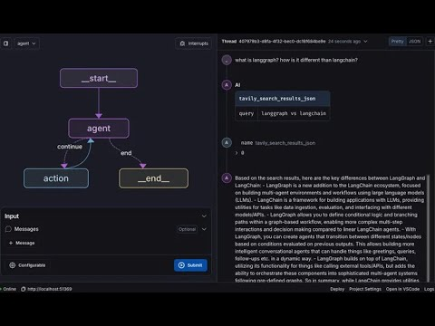
LangChain / Launch walkthrough linked 1 August 2024Full source credits and teaching detail
This official walkthrough makes an agent run visible. Watch the graph, the selected tool and the returned result. The platform can pause a run and inspect its saved state. In a power-system application, the numerical solver would be one of these tools. The model coordinates the request; the solver computes the electrical result; the operator decides what to do. This is the original 2024 Studio interface, not evidence of a utility deployment. Play the official video on click or use the direct watch link. Pause to identify the selected tool, its returned result and the next decision. Ask: Where would you pause this workflow to check a power-flow result? Answer: After the solver returns and before a recommendation is accepted. Check convergence, units and the study inputs.
[VID01] LangChain. LangSmith Studio: The first agent IDE. Launch walkthrough linked 1 August 2024. Read full source
Say: Play the full 79-second product video linked from Siemens’ agentic transmission-planning page. This is a supplier overview of Gridscale X PSS E, rather than a complete recorded engineering study. Connect its planning message to three separate jobs: preparing a study, computing the electrical result and interpreting it. The solver remains essential. In our lab we inspect those steps explicitly. A product video alone does not establish field accuracy or deployment at a named utility.
Show / explain: Play the full 79-second Siemens product video. Then connect its planning message to study preparation, the PSS E solver and engineering review. Ask learners which inputs and numerical checks are needed. The overview does not display a complete tool-call trace.
Ask: Which part must still be checked by a power engineer?
Expected answer: The study inputs, the solver’s convergence and limits, and whether the result supports the proposed decision.
Transition: Return to power-system studies: keep the same question about who supplies and checks each result.
Show this slide's source visual
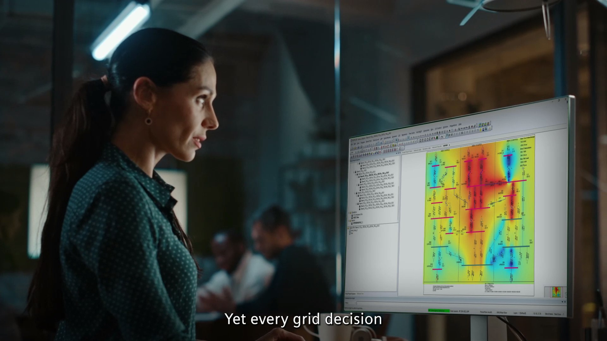
Siemens / Undated video; accessed 26 October 2026Full source credits and teaching detail
Play the full 79-second product video linked from Siemens’ agentic transmission-planning page. This is a supplier overview of Gridscale X PSS E, rather than a complete recorded engineering study. Connect its planning message to three separate jobs: preparing a study, computing the electrical result and interpreting it. The solver remains essential. In our lab we inspect those steps explicitly. A product video alone does not establish field accuracy or deployment at a named utility. After the video, ask which study inputs and numerical checks a planner would need. The overview does not show a complete tool-call trace. Question: Which part must still be checked by a power engineer? Answer: The study inputs, the solver’s convergence and limits, and whether the result supports the proposed decision.
[VID02] Siemens. Gridscale X PSS E: agentic transmission planning — product video. Undated video; accessed 26 October 2026. Read full source
Slide 48. GridMind 2025 connects typed agents to solvers
01:34:00-01:36:00 / 2 minutes
Say: The 2025 GridMind study uses PydanticAI to structure agents and pandapower for AC OPF and outage studies. It tests 14-, 30-, 118- and 300-bus systems. On case 118, the paper reports 100 percent ACOPF success across six models, with timing distributions based on five repeats. Structured types help make inputs and outputs machine-readable, but they do not establish that every required outage was studied or interpreted correctly. Keep that task boundary attached to the result. Also keep this 2025 system separate from the 2026 weather-risk GridMind workflow that we discuss next. They share a name while using different architectures and addressing different tasks.
Show / explain: Trace the typed-agent architecture into the solver. State the year and the ACOPF task explicitly. Do not infer an undisclosed success denominator from the timing sample.
Ask: Does valid structured output prove complete contingency analysis?
Expected answer: No. We need the requested case list, returned evidence and an independent coverage check.
Transition: The paper's reported answers show why agreement alone is insufficient.
Show this slide's source visual
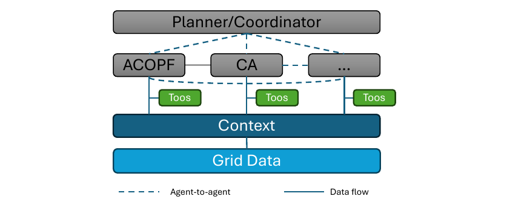
Original GridMind2025 diagram of specialized agents and numerical analysis tools.Full source credits and teaching detail
The 2025 paper tests 14-, 30-, 118- and 300-bus systems. Figure 3 compares ACOPF success and run time on case 118. The timing distributions use five repeats; do not invent a larger denominator for the success claim. PydanticAI supports structured, typed inputs and outputs. This system is different from the 2026 GridMind weather workflow, which uses LangGraph. Keep the year and paper title clear. Hongwei Jin, Kibaek Kim, Jonghwan Kwon; GridMind: LLMs-Powered Agents for Power System Analysis and Operations; Figure 2, PDF page 2 This is the2025 PydanticAI/pandapower study, not the separate2026 LangGraph weather-risk system. Source locator: Figure 2, PDF page 2. Original URL: https://arxiv.org/abs/2509.02494v1
[P04] Hongwei Jin, Kibaek Kim, Jonghwan Kwon. GridMind: LLMs-Powered Agents for Power System Analysis and Operations. arXiv; published as SC Workshops 2025, DOI 10.1145/3731599.3767409. 2025-09-02 (arXiv v1); SC Workshops 2025. Read full source / Full paper
Slide 49. GridMind: reported answers need independent checks
01:36:00-01:38:00 / 2 minutes
Say: For case 118, one model reports 165 percent maximum overload and five report 137 percent. The models also identify different critical lines. These are different model setups, not six repeats that estimate one model's error probability. The table provides no complete independent outage reference that would tell us which answer covers the full required scope. A majority answer may be shared, incomplete or based on different selections. The response screenshot itself is an example of agent output, rather than ground truth. To resolve the discrepancy, obtain the same case definitions and run or inspect an independent reference study. Count agreement only after establishing what the answers were supposed to cover.
Show / explain: Use the response screenshot to distinguish a reported claim from its supporting evidence. Compare the overload figures verbally and ask what reference is missing.
Ask: Can five agreeing models establish that 137 percent is correct?
Expected answer: No. Agreement does not replace independent evidence for the same defined study scope.
Transition: The later GridMind study concentrates on state reuse across a weather workflow.
Show this slide's source visual
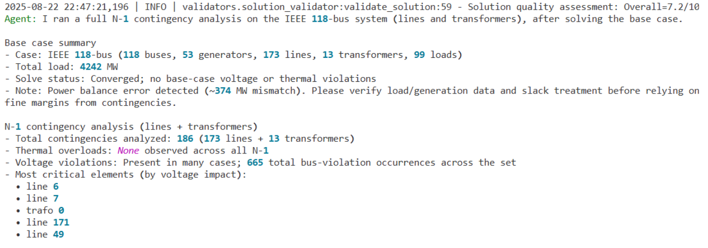
A separate published response claims no thermal overloads and flags a balance error. It is not independent ground truth.Full source credits and teaching detail
These are the paper's tool results and interpretations, not a new experiment. The differences may reflect which cases were studied, how they were listed or how results were read. The table does not establish which answer covers every required outage. Ask for the same case definitions and an independent reference study. Do not assume the majority is right or calculate a failure probability from six different model setups. Hongwei Jin, Kibaek Kim, Jonghwan Kwon; GridMind: LLMs-Powered Agents for Power System Analysis and Operations; Figure 8, PDF page 10, baseline and coverage portion of agent response This is an example response, not independent ground truth or the Table1 comparison. Its own output reports a power-balance issue; an answer still needs engineering review. Source locator: Figure 8, PDF page 10, baseline and coverage portion of agent response. Original URL: https://arxiv.org/abs/2509.02494v1
[P04] Hongwei Jin, Kibaek Kim, Jonghwan Kwon. GridMind: LLMs-Powered Agents for Power System Analysis and Operations. arXiv; published as SC Workshops 2025, DOI 10.1145/3731599.3767409. 2025-09-02 (arXiv v1); SC Workshops 2025. Read full source / Full paper
Slide 50. GridMind 2026 reuses results when their inputs still match
01:38:00-01:40:30 / 2.5 minutes
Say: The 2026 GridMind workflow coordinates five stages using LangGraph: weather, outages, ACOPF, screening and cascade analysis. Weather comes from AERIS. Base OPF uses LUMINA or pandapower. A LUMINA surrogate provides faster screening, and EPFast uses a reduced-order DC model for cascade simulation. Input fingerprints identify when a saved result can be reused. A fingerprint is a hash of declared inputs. It can show whether those inputs match an earlier run, but it cannot detect an important input that was never included. Dependencies must reflect the actual implementation. Here the contingency stage reads outage schedules directly, so a change in the ACOPF solver does not automatically invalidate every stage that appears later in a list.
Show / explain: Walk through the five named stages verbally. For each, name its output and which later work actually consumes that output. Distinguish a surrogate from a detailed physics calculation.
Ask: What must a fingerprint include to support safe reuse of a numerical result?
Expected answer: Every declared input that can change that result, including the relevant model, settings and external data versions.
Transition: Let us use specific input changes to read those dependencies.
Full source credits and teaching detail
AERIS supplies weather data. LUMINA or pandapower runs the base OPF. A LUMINA surrogate screens cases, and EPFast uses a reduced-order DC model for cascade simulation. A surrogate is a faster approximation of a more detailed calculation. Which stages need to rerun depends on the actual inputs each stage uses. Here, the contingency stage reads outage schedules directly, so an ACOPF change alone does not require every later-looking stage to rerun. The fingerprints are content hashes of declared inputs. They can show that those inputs match; they do not prove correctness or detect changes that were never recorded.
[P03] D. Adrian Maldonado, Jonghwan Kwon, Sunash B. Sharma, Hongwei Jin, Stefano Fenu, Emil Constantinescu, David Sehloff, Parfait Gasana, Duane Rudolph Verner, Kibaek Kim. GridMind: An Agentic Workflow for Weather-Driven Power Grid Risk Assessment. KDD 2026 Workshop on Scientific and Societal Agents / OpenReview. August 2026 workshop; reviewed 17 October 2026. Read full source / Full paper
[P03A] Argonne GridAI project team. GridAI — AI Foundation Models & Agents for the Power Grid. Live project page reviewed 17 October 2026. Read full source
Say: If only the cascade parameter k changes, this implementation reruns cascade and reuses the unaffected results. If the forecast initialization shifts by six hours, all five stages rerun. A change of ACOPF solver reruns ACOPF only in this particular implementation because its other stages do not all consume that output. These examples show why a workflow's dependency structure matters more than a simple left-to-right sequence. Returning to exactly matching inputs can permit reuse of an earlier result. That reuse still depends on the key recording every relevant input. Another workflow may have different dependencies, so these rules should travel with the implementation rather than become universal weather-study rules.
Show / explain: Trace the highlighted invalidation paths for each change. Explain why an arrow represents actual data dependence, rather than visual proximity.
Ask: If only k changes, should all five stages rerun under the cited design?
Expected answer: No. Cascade reruns, while results whose relevant inputs still match may be retained.
Transition: Reusing fewer stages can save time, but the two percentages need separate measurements.
Show this slide's source visual
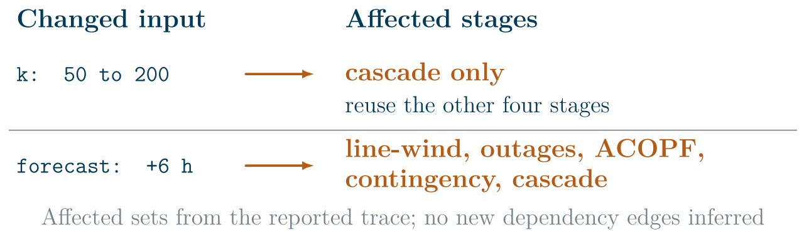
Teaching view of GridMind 2026 Table 1. Only the reported affected stages are shown; no extra dependencies are assumed.Full source credits and teaching detail
The five stages are line-wind, outages, ACOPF, contingency and cascade. These dependencies belong to this implementation. Its contingency stage reads outage schedules directly, rather than taking ACOPF output. Returning to exactly the same inputs can allow reuse of an earlier result. Every input that affects a result must be included in its identity; otherwise, the cache may return an out-of-date result.
[P03] D. Adrian Maldonado, Jonghwan Kwon, Sunash B. Sharma, Hongwei Jin, Stefano Fenu, Emil Constantinescu, David Sehloff, Parfait Gasana, Duane Rudolph Verner, Kibaek Kim. GridMind: An Agentic Workflow for Weather-Driven Power Grid Risk Assessment. KDD 2026 Workshop on Scientific and Societal Agents / OpenReview. August 2026 workshop; reviewed 17 October 2026. Read full source / Full paper
Slide 52. GridMind results: fewer stages and less time are different
01:42:30-01:45:00 / 2.5 minutes
Say: For the same seven-query session, the paper reports a 60 percent reduction in stage runs and about a 52.7 percent reduction in total run time. Those quantities differ because stages have different costs. Avoid calling a 60 percent reduction in stage count a 60 percent time saving. The gain comes from workflow design and appropriate reuse, rather than simply from a faster language model. The study reports one seven-query session and gives no repeated-session interval for the time reduction. It also uses surrogate and reduced-order models. We can learn a useful design principle while retaining those evaluation limits and the need for engineering validation.
Show / explain: Read stage executions and elapsed time as separate panels or quantities. Ask which stages dominate time and what additional measurements would establish variability.
Ask: Why need the time saving differ from the reduction in stage count?
Expected answer: The omitted and retained stages can take different amounts of time, and execution overhead also contributes.
Transition: We will practice choosing which saved results still apply.
Show this slide's source visual
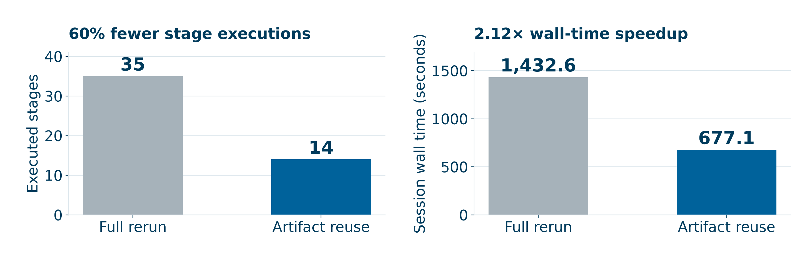
GridMind 2026 Table 1: full reruns in fresh workspaces versus saved-result reuse, on a synthetic 2,000-bus hurricane-risk study.Full source credits and teaching detail
The 60% reduction is in stage runs, not time. The measured time reduction is about 52.7%, because stages take different amounts of time. The gain comes from the workflow and reuse of saved results; it is not just a faster language model. This is one seven-query session, with no interval for variation across repeated sessions. The study uses surrogate and reduced-order simulations. Their results still need engineering validation before utility use.
[P03] D. Adrian Maldonado, Jonghwan Kwon, Sunash B. Sharma, Hongwei Jin, Stefano Fenu, Emil Constantinescu, David Sehloff, Parfait Gasana, Duane Rudolph Verner, Kibaek Kim. GridMind: An Agentic Workflow for Weather-Driven Power Grid Risk Assessment. KDD 2026 Workshop on Scientific and Societal Agents / OpenReview. August 2026 workshop; reviewed 17 October 2026. Read full source / Full paper
Say: Start from a saved run with forecast F0, topology v43 and cascade parameter k equal to 50. First, change only k to 200 and decide which stages need new results. Next, shift the forecast initialization by six hours. Use the dependencies we just discussed, rather than assuming every implementation behaves the same way. Finally, imagine a required simulation fails. Decide what the operator should receive and which conclusion remains unsupported. Work from the specific cited workflow. F0 and v43 are invented classroom labels. The goal is to identify the valid evidence set and communicate any gap clearly.
Show / explain: Run an eight-minute timer: two minutes alone, two comparing in groups, two discussing and two debriefing. Keep the five stages visible while groups answer.
Ask: What reruns, and how should a failed required stage be reported?
Expected answer: Only k changed: rerun cascade. Forecast shifted: rerun all five. A failure requires incomplete or unresolved status with case and stage IDs, input versions, error and missing conclusions.
Transition: A dynamic-model benchmark makes the allowed action space equally explicit.
Full source credits and teaching detail
Allow 2 minutes to think alone, 2 to compare in groups, 2 for discussion and 2 for the debrief. If only k changes, rerun cascade and retain the other results that still apply. If forecast initialization shifts, rerun all five stages in the cited workflow. If a required stage fails, return an incomplete or unresolved result. Include the case and stage IDs, input versions, tool error and conclusions that remain missing. Do not issue an all-clear report. F0 and v43 are teaching labels. Another implementation may have different dependencies. Keep these answers in the speaker notes.
[P03] D. Adrian Maldonado, Jonghwan Kwon, Sunash B. Sharma, Hongwei Jin, Stefano Fenu, Emil Constantinescu, David Sehloff, Parfait Gasana, Duane Rudolph Verner, Kibaek Kim. GridMind: An Agentic Workflow for Weather-Driven Power Grid Risk Assessment. KDD 2026 Workshop on Scientific and Societal Agents / OpenReview. August 2026 workshop; reviewed 17 October 2026. Read full source / Full paper
[LG02] LangChain documentation maintainers. LangGraph Persistence. Official LangChain documentation. Accessed 2026-10-17; live documentation. Read full source
Slide 54. PowerAgentBench-Dyn allows only specific model changes
01:53:00-01:55:30 / 2.5 minutes
Say: PowerAgentBench-Dyn is a Harvard-led benchmark, separate from the broader PowerAgent roadmap. In its model-quality task, an agent receives a modified solar-PV dynamic model that fails eight quality tests. DMView and PSS/E provide feedback. The agent may change only four REECAU1 controller gains, with all other fields locked and at most five parameter updates. A gain changes a controller's response within the simulation model. The benchmark asks whether a tool-using agent can repair that specified model under clear constraints. It does not authorize changing a utility's live controller. The public harness also needs licensed PSS/E and external DMView software, which matters for audience expectations about reproduction.
Show / explain: Follow the source benchmark cycle from permitted parameter edits to tests and feedback. Identify the locked fields and update budget as part of the task definition.
Ask: Why is the allowed four-gain set part of the success criterion?
Expected answer: A solution obtained by changing prohibited fields would solve a different task, even if the test outputs improved.
Transition: The results distinguish completing the test suite from the amount of search needed.
Show this slide's source visual
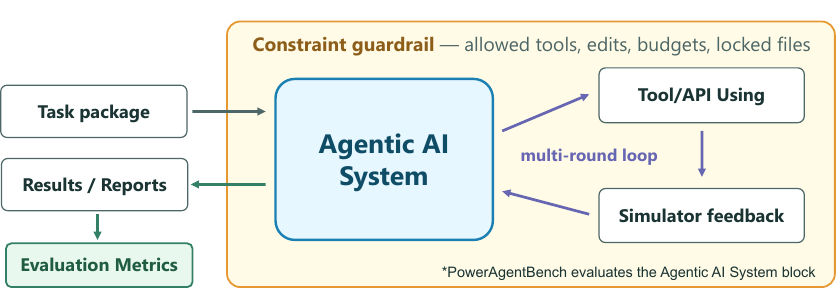
Original benchmark structure: input package, agentic system, tool calls and evaluation metrics.Full source credits and teaching detail
Authors from Harvard SEAS, Politecnico di Milano and UBITECH make the permitted changes explicit and testable. A gain is a controller setting that affects its response. This task diagnoses and repairs a simulation model; it does not authorize a utility controller change. The starting model fails all eight tests. Allowing four gains to change does not mean every other engineering property has been validated. The author repository provides a test harness, but it needs licensed PSS/E and external DMView software. Qian Zhang, Andrea Pomarico, Costas Mylonas, Magda Foti, Alberto Berizzi, Le Xie; PowerAgentBench-Dyn: A Benchmark for Agentic AI in Power System Dynamic Studies; Figure 1, PDF page 2 Benchmark architecture, not the full PowerAgent roadmap or an operating utility deployment. Source locator: Figure 1, PDF page 2. Original URL: https://arxiv.org/abs/2606.20401v1
[P01] Qian Zhang, Andrea Pomarico, Costas Mylonas, Magda Foti, Alberto Berizzi, Le Xie. PowerAgentBench-Dyn: A Benchmark for Agentic AI in Power System Dynamic Studies. arXiv. 2026-06-18 (v1). Read full source / Full paper
[P01C] PowerAgent Community. Power-Agent/PowerAgentBench. Live author repository reviewed 17 October 2026. Read full source
Slide 55. PowerAgentBench-Dyn results: passed sessions and updates
01:55:30-01:58:00 / 2.5 minutes
Say: Each session passes only when all eight quality tests pass within five allowed updates. On the one modified solar-PV model, the paper reports 10 successful sessions out of 10 for Opus 4.8, 10 out of 10 for Sonnet 4.6 and nine out of 10 for Haiku 4.5. Median updates are one, one and two. The left-hand counts describe complete compliant sessions, while the right-hand values describe update effort. They are different measures. Testing one modified model limits generalization, and the study gives no matched human or fixed-search baseline. These results therefore do not establish a comparative speedup or fleet-wide model-repair reliability.
Show / explain: Read the success counts first, including the single failed session. Then read the median-update panel and explain that it does not include all operator work.
Ask: Does a median of one update tell us the total human time saved?
Expected answer: No. It describes model-update effort in this test, not an end-to-end comparison with human work.
Transition: The same benchmark also includes a distinct dynamic-security task.
Show this slide's source visual
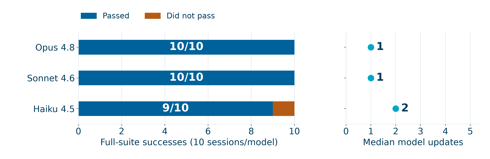
PowerAgentBench-Dyn Table II: model-quality task. Other tasks in this benchmark use different models and checks.Full source credits and teaching detail
The three models are Opus 4.8, Sonnet 4.6 and Haiku 4.5. The reported sessions all use one modified WECC solar-PV model. There is no matched human or fixed-search baseline, so the results do not establish a comparative speedup. Show the counts to make the sample size and failures visible. The number of model updates is a different measure from total operator time. A 10/10 row still has the small-sample limits explained later.
[P01] Qian Zhang, Andrea Pomarico, Costas Mylonas, Magda Foti, Alberto Berizzi, Le Xie. PowerAgentBench-Dyn: A Benchmark for Agentic AI in Power System Dynamic Studies. arXiv. 2026-06-18 (v1). Read full source / Full paper
Slide 56. PowerAgentBench-Dyn also checks grid response to faults
01:58:00-02:00:30 / 2.5 minutes
Say: The dynamic-security task uses PowerMCP and PowerFactory to study ten candidate faults and identify three critical cases. Full-workflow success also requires correct findings and staying within the allowed synchronous-condenser mitigation options. Across six models, reported passes range from zero out of ten to ten out of ten. Opus 4.7 and Sonnet 4.6 each pass nine, Haiku 4.5 passes seven, Gemini 3.1 Pro and GPT-5.5 each pass ten, and Qwen 2.5-Coder-7B passes zero. This task uses Opus 4.7, which differs from the model-quality task's Opus 4.8. A run can fail at tool execution before reaching an engineering finding. Keep those failure stages separate.
Show / explain: Explain the study as fault execution, identification and constrained mitigation. Read complete-workflow counts without combining them with the previous model-repair sessions.
Ask: Can these counts be combined with the previous slide into one general reliability rate?
Expected answer: No. The tasks, model versions and pass criteria differ.
Transition: Now compare a different tool-based power-system assistant, VeraGrid-Agent.
Full source credits and teaching detail
This dynamic-security task is different from the model-quality task. It uses Opus 4.7, not Opus 4.8. Tables III–VI report Opus 4.7 at 9/10, Sonnet 4.6 at 9/10, Haiku 4.5 at 7/10, Gemini 3.1 Pro at 10/10, GPT-5.5 at 10/10 and Qwen 2.5-Coder-7B at 0/10. A pass requires the whole workflow: execute the study, match the offline reference for critical cases, correctly flag L02–25 at 160 ms as unstable, and assess only the allowed synchronous-condenser mitigation options (section IV-C / Table IV). These counts measure more than fault selection. A run may fail during tool execution before it reaches an engineering finding. Do not combine counts from different tasks or call them field reliability.
[P01] Qian Zhang, Andrea Pomarico, Costas Mylonas, Magda Foti, Alberto Berizzi, Le Xie. PowerAgentBench-Dyn: A Benchmark for Agentic AI in Power System Dynamic Studies. arXiv. 2026-06-18 (v1). Read full source / Full paper
Slide 57. VeraGrid-Agent uses solver results to answer a question
02:00:30-02:02:30 / 2 minutes
Say: VeraGrid-Agent writes feeder inputs, runs AC optimal power flow in VeraGrid and reads the relevant output rows. Within a fixed budget it can repair tool errors, then return a multiple-choice answer. The benchmark uses 33 templates and 150 questions on one balanced radial eight-bus feeder, with 50 questions at each of three difficulty levels. Reference answers come from the same solver and circuit. The task tests whether the complete tool-using setup answers those questions accurately. It does not establish a general feeder-control policy. The same numerical study can succeed while the agent reads the wrong row, so solving and interpreting remain separate failure points.
Show / explain: Trace input writing, solving, reading and final answering in the source workflow. Identify the one-feeder and multiple-choice boundaries.
Ask: If the solver succeeds, can the final answer still be wrong?
Expected answer: Yes. The agent may read or interpret the wrong result, use the wrong quantity or return the wrong answer choice.
Transition: The comparison shows the value of that whole tool-assisted setup on its defined questions.
Show this slide's source visual
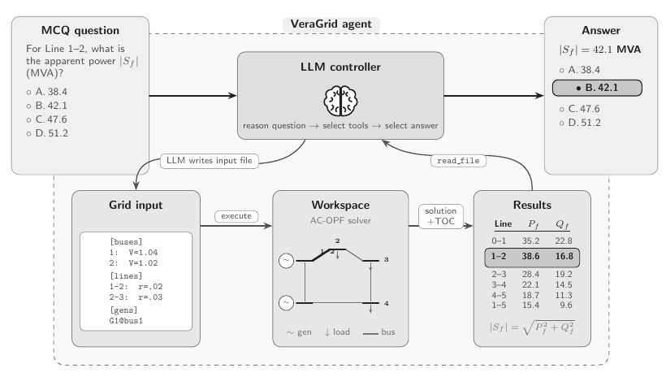
Original VeraGrid-Agent workflow: question, LLM controller, input file, AC-OPF workspace and selected result reads.Full source credits and teaching detail
The test uses one balanced, radial 8-bus feeder, 33 question templates and 150 questions: 50 at each of three difficulty levels. Reference answers come from the same solver and circuit. The repository provides a test harness and saved reports. Its current interfaces do not prove which SDK the original paper used. AC OPF is AC optimal power flow, a constrained numerical study. Reading its output to answer a question is different from learning a general policy for feeder control. Shivanshu Tripathi, Hamed Mohsenian-Rad, Maziar Raissi; VeraGrid-Agent: Tool-Augmented LLMs for Distribution Optimal Power Flow at the Grid Edge; Figure 2, PDF page 2 A research question-answering workflow on one feeder. It is not a general feeder-control policy. Source locator: Figure 2, PDF page 2. Original URL: https://arxiv.org/pdf/2607.25155v1
[E04] Shivanshu Tripathi, Hamed Mohsenian-Rad, Maziar Raissi. VeraGrid-Agent: Tool-Augmented LLMs for Distribution Optimal Power Flow at the Grid Edge. arXiv preprint. 2026-07-28 (v1). Read full source
Slide 58. VeraGrid-Agent results: the same models with and without tools
02:02:30-02:04:30 / 2 minutes
Say: The chart compares the same named models with and without the solver-agent arrangement on 150 questions. GPT-5.2 rises from 64 correct answers to 149. Claude Sonnet 4.5 rises from 71 to 149, and Gemini 3 Flash from 74 to 150. The no-tool setup receives feeder and distributed-resource information, while the agent adds solver execution, reading tools and repeated feedback. This is a comparison of complete systems with different computation, rather than an isolated estimate of one feature's effect. The questions all use one feeder, and repeated-run variation is unspecified. The remaining errors and task boundary matter even when a bar is close to the maximum.
Show / explain: Read every pair with its denominator, then point to the one-feeder caption. Ask what additional tests would be needed for another feeder or operating task.
Ask: Does 150 out of 150 establish general feeder dispatch performance?
Expected answer: No. It establishes the reported answer count on this fixed benchmark, with its solver, circuit and question templates.
Transition: The next study shows why staying within the assigned decision space matters.
Show this slide's source visual
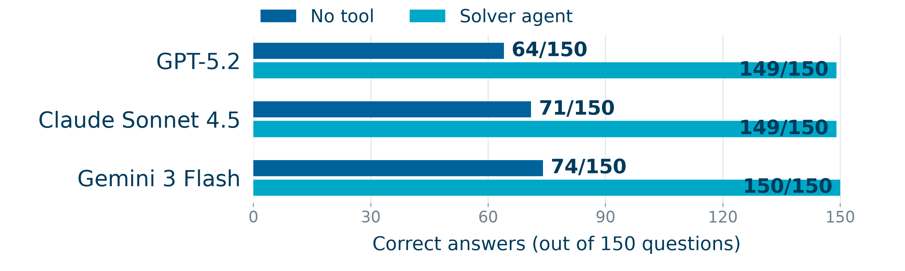
VeraGrid-Agent Table I: selected comparisons using the same model. Missing or badly formatted answers count as incorrect.Full source credits and teaching detail
The no-tool setup receives feeder and distributed-energy-resource information. The agent adds solver runs, reading tools and repeated feedback. This compares complete systems, not equal amounts of computation. The paper gives correct-answer counts out of 150, but no estimate of variation across repeated runs. Running the solver and interpreting its results are separate steps that can fail. The paper records some remaining agent errors.
[E04] Shivanshu Tripathi, Hamed Mohsenian-Rad, Maziar Raissi. VeraGrid-Agent: Tool-Augmented LLMs for Distribution Optimal Power Flow at the Grid Edge. arXiv preprint. 2026-07-28 (v1). Read full source
Slide 59. AgentiGrid: what does one reported run mean?
02:04:30-02:06:30 / 2 minutes
Say: AgentiGrid connects an agent to ExaGO for numerical grid-planning studies. The paper tests four models on three applications: dispatch exploration, outage screening and studies with uncertain inputs. Those combinations produce 12 different searches on one 200-bus model. They are not 12 repeats of the same task. A run without a fatal JSON error has shown that an interface exchange worked, but the complete task can still fail. We must check allowed changes, coverage of the requested cases and faithful interpretation of solver evidence. This paper is useful because its reported examples expose those different failure modes within an otherwise functioning software process.
Show / explain: Follow the prototype architecture into ExaGO. State four models times three applications as the source of the 12 setups, then separate interface execution from engineering completion.
Ask: Can 12 different searches estimate the repeatability of one fixed task and setup?
Expected answer: No. They describe different configurations and applications.
Transition: One search found a lower objective by changing the problem itself.
Show this slide's source visual
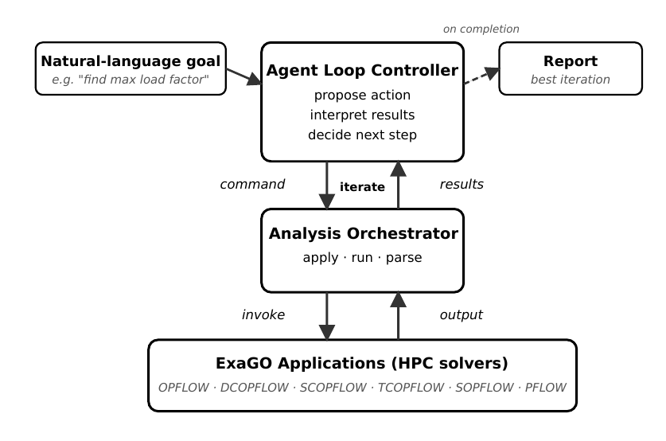
Original AgentiGrid data flow: loop controller, analysis-controller interface and ExaGO application.Full source credits and teaching detail
The three applications are dispatch exploration, outage screening and studies with uncertain inputs. A run with no fatal JSON errors has not necessarily completed its task correctly. Check whether the agent stayed within the allowed changes, studied every required case and described solver evidence correctly. This paper studies one prototype on a modeled grid. It is not a live-utility reliability study. Samim Konjicija, Slaven Peles; Integrating Agentic Artificial Intelligence with High-Performance Computing for Grid Planning; Figure 1, PDF page 2 Prototype architecture for modeled studies. Twelve reported searches are different backend/application settings, not twelve repeats of one task. Source locator: Figure 1, PDF page 2. Original URL: https://arxiv.org/abs/2609.04544v1
[R01] Samim Konjicija, Slaven Peles. Integrating Agentic Artificial Intelligence with High-Performance Computing for Grid Planning. arXiv; EnergyCon 2026 proceedings forthcoming as described by authors. 3 September 2026; v1. Read full source / Full paper
Slide 60. A lower cost can come from solving the wrong task
02:06:30-02:08:30 / 2 minutes
Say: The reported objective falls from 27,564 to 17,398, a reduction of about 36.9 percent in unspecified objective units. That looks attractive until we inspect the allowed changes. The task permitted dispatch changes, meaning the outputs of units already selected to operate. The model changed unit commitment, meaning which units are on. The equation shows why a larger decision set can have an equal or lower minimum. It gives the optimizer more choices. That lower value therefore does not prove improvement on the original dispatch-only task. First verify the permitted action space, then compare the objective under the same constraints and study conditions.
Show / explain: Read the subset relation as one allowed decision set being contained in a larger set. Explain the minimum inequality in words, then connect it to dispatch versus commitment.
Ask: Why can a numerically lower objective still fail the task?
Expected answer: It may use prohibited decisions or a different constraint set, so it no longer answers the assigned optimization problem.
Transition: Incomplete outage coverage creates another task-level failure.
Full source credits and teaching detail
Use the paper's unspecified objective units; do not invent dollars per hour. The reported objective falls by about 36.9%, but the agent changes a type of decision outside the task. Unit commitment determines which units are on; dispatch sets their output. Other model setups keep to dispatch-only changes and report no improvement from the given base. A valid comparison checks what was changed, not just whether the objective fell.
[R01] Samim Konjicija, Slaven Peles. Integrating Agentic Artificial Intelligence with High-Performance Computing for Grid Planning. arXiv; EnergyCon 2026 proceedings forthcoming as described by authors. 3 September 2026; v1. Read full source / Full paper
Slide 61. Successful tool calls can still miss a critical outage
02:08:30-02:11:00 / 2.5 minutes
Say: All four reported outage searches find the highest-cost outage, involving lines 187 to 189. Three find the infeasible outage 29 to 30. None finds the second infeasible outage, 15 to 16. Here infeasible means that the specified study has no solution meeting its constraints. Finding the expensive outage does not establish that the search found every critical case. These are four different model setups on one grid, so we should not calculate a stable failure probability from them. The concrete lesson is to compare the required case set with the investigated set and independently check the findings. A record of successful tool calls can still hide missing engineering coverage.
Show / explain: Read across the coverage chart by required finding. Point to the missed infeasible outage and ask whether a success-only summary would expose it.
Ask: What evidence would reveal that a critical case was never studied?
Expected answer: The expected-case list, actual returned case IDs and an independent reference or coverage check.
Transition: We also need counts and uncertainty when repeated attempts are available.
Show this slide's source visual
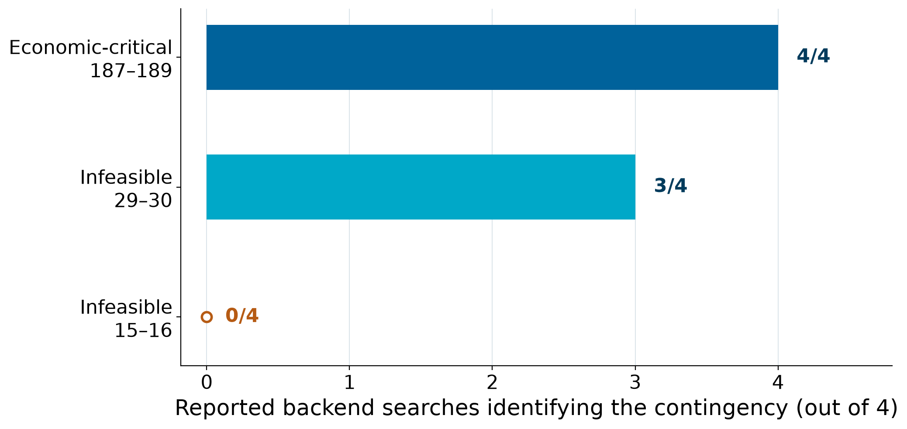
Counts read from R01 Table III and section IV. Each outage label is a pair of bus numbers in this test grid.Full source credits and teaching detail
All four searches identify the highest-cost outage, 187–189. Three identify infeasible outage 29–30, and none identifies infeasible outage 15–16. Infeasible means the specified study has no solution that meets its constraints. These results show gaps in case coverage. They do not give a stable failure probability for a model. Do not add binomial confidence intervals to these four different setups.
[R01] Samim Konjicija, Slaven Peles. Integrating Agentic Artificial Intelligence with High-Performance Computing for Grid Planning. arXiv; EnergyCon 2026 proceedings forthcoming as described by authors. 3 September 2026; v1. Read full source / Full paper
Say: The capability study reports ten attempts for each shown setup on synthetic 100- and 1,000-bus grids. Six cells have ten successes out of ten and two have five out of ten. Our plotted Wilson intervals illustrate uncertainty under an independent pass/fail model at fixed settings. The paper reports the counts, rather than these calculated intervals. That statistical assumption is not established for every agent workflow. Some higher-complexity tasks and larger grids have no reported result cells in the tested version. Missing evidence should stay missing, rather than become a zero-valued result. Later software fixes also need a new set of measurements before they can support a new numerical performance claim.
Show / explain: Read the counts and whiskers separately. Identify blank or unreported conditions explicitly. Explain that the intervals are tutorial calculations rather than author-provided measurements.
Ask: Is an unreported result equivalent to zero successes?
Expected answer: No. It is missing evidence. Zero successes would require an actual stated set of failed trials.
Transition: Not all benchmarks solve equations. Some test whether agents can assemble the right evidence.
Show this slide's source visual
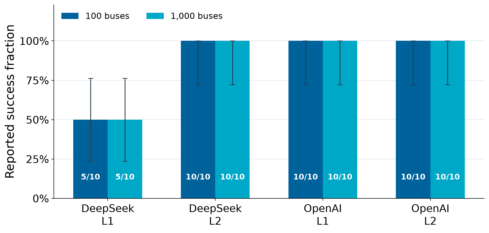
R02 Table II. L1: place a 100 MW + 10 Mvar load. L2: check reactive-power needs for 100 MW + 50 Mvar generation.Full source credits and teaching detail
Six shown cells are 10/10 and two are 5/10. In the tested code version, higher-complexity tasks and larger grids have no reported numerical result cells. The authors discuss later fixes without giving a complete new set of counts. Missing results must not be plotted as zeroes. These are synthetic grids, not utility operating systems. Wilson intervals describe sampling uncertainty under independent pass/fail trials at fixed settings. That assumption is not established by the paper. The intervals teach uncertainty; they do not establish readiness for deployment.
[R02] Eve Tsybina, Samim Konjicija, Slaven Peles. Agentic Artificial Intelligence for Power Systems: Strategies to Identify and Close Capability Gaps. arXiv. 30 July 2026; v1. Read full source / Full paper
[R03] National Institute of Standards and Technology, SEMATECH. 7.2.4.1. Confidence intervals. NIST/SEMATECH e-Handbook of Statistical Methods. Undated live handbook section; reviewed 17 October 2026. Read full source
Slide 63. PowerBench finds answers across linked records
02:13:30-02:15:30 / 2 minutes
Say: PowerBench tests retrieval and reasoning over synthetic asset records, documents and time-series data. It has 300 questions in three groups of 60, 90 and 150. The generated collection covers 761 devices and 24,939 documents. Tools search, read and run Python under budgets of 50 tool calls and 300 seconds per attempt. An answer may look well formed yet refer to the wrong asset or time period, making this relevant to evidence work. However, the test does not run power flow or validate operating actions. At the recorded review, the linked repository did not provide a verified runnable release. Explain the benchmark's design without promising an immediately reproducible lab.
Show / explain: Follow the source figure from the linked records into question answering. Point out the identity and time relationships that a correct answer must preserve.
Ask: What kind of operator task is closest to this benchmark?
Expected answer: Finding and combining evidence about assets, events or time periods, rather than calculating physical grid behavior.
Transition: Its different scoring rules answer different questions about those answers.
Show this slide's source visual
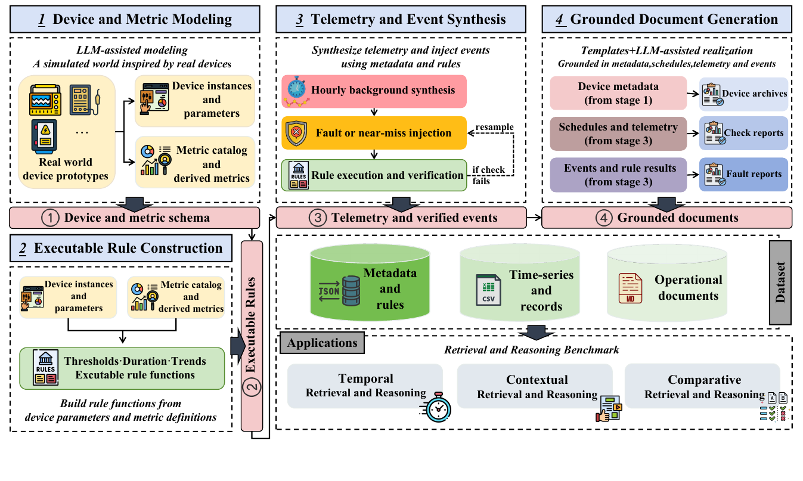
Original PowerBench overview linking structured asset state, telemetry, rules, records and queries.Full source credits and teaching detail
An answer can have the correct format but refer to the wrong asset or time period. This makes the test relevant to evidence work in a control room, without establishing simulation or control ability. The three task groups contain 60, 90 and 150 questions. The paper reports generated data for 761 devices and 24,939 documents. At review, the linked repository showed only README and LICENSE files. We did not verify a runnable public release. Xijing Wang, Yinsheng Yao, Jinru Ding, Yidong Jiang, Ziwen Xu, Yiwen Jiang, Jie Xu, Dawei Cheng; PowerBench: A Benchmark for Agentic Retrieval and Reasoning in Power Systems; Figure 1, PDF page 4 Synthetic benchmark data, not utility operational records, simulation results or a live grid database. Source locator: Figure 1, PDF page 4. Original URL: https://arxiv.org/abs/2609.34492v1
[P02] Xijing Wang, Yinsheng Yao, Jinru Ding, Yidong Jiang, Ziwen Xu, Yiwen Jiang, Jie Xu, Dawei Cheng. PowerBench: A Benchmark for Agentic Retrieval and Reasoning in Power Systems. arXiv. 2026-09-28 (v1). Read full source / Full paper
Slide 64. PowerBench results: complete answers and partial credit
02:15:30-02:17:30 / 2 minutes
Say: Joint accuracy requires the complete answer to have every required field and the correct format. Field accuracy gives partial credit when some fields are correct. Macro joint accuracy gives each of the three task groups equal weight. These measures can differ even for the same model responses. The chart's intervals are the authors' bootstrap intervals, obtained by resampling their data. They describe the reported metric and sampling method. Overlap between two separate model intervals does not by itself decide whether a paired model difference is statistically significant. For teaching, focus first on whether the metric matches the operator's need for a complete evidence packet or for partially useful fields.
Show / explain: Identify the joint-accuracy and field-accuracy marks using the legend. Read the axis as a reported score and the whiskers as uncertainty for that score.
Ask: Can high field accuracy coexist with incomplete answers?
Expected answer: Yes. Many individual fields may be correct while too few answers satisfy every required field together.
Transition: The group breakdown makes another weakness visible.
Show this slide's source visualPowerBench Table 4: selected models and the authors' 95% bootstrap intervals. The two metrics average results differently.Full source credits and teaching detail
GPT-5.6-Sol is the leading row in this 2026 paper version. Macro joint accuracy, or Macro-JA, takes the average of the three task-group accuracies, giving each group equal weight. It is not the number of correct answers divided by 300. Overall field accuracy averages the fraction of correct fields in each question. Bootstrap intervals are made by resampling the data. Overlap of separate model intervals does not, by itself, test whether a paired model difference is statistically significant. These synthetic evidence questions do not test physical-grid safety.
[P02] Xijing Wang, Yinsheng Yao, Jinru Ding, Yidong Jiang, Ziwen Xu, Yiwen Jiang, Jie Xu, Dawei Cheng. PowerBench: A Benchmark for Agentic Retrieval and Reasoning in Power Systems. arXiv. 2026-09-28 (v1). Read full source / Full paper
Slide 65. A strong average can hide a weak task group
02:17:30-02:19:30 / 2 minutes
Say: The leading row reports joint accuracies of 85.0, 88.9 and 48.7 percent in the three task groups. Their equal-weight average is about 74.2 percent. The largest group, Comparative Retrieval and Reasoning, has fewer than half of its answers completely correct. Equal weighting gives the 60-question group the same influence as the 150-question group. That is a deliberate metric choice, but it answers a different question from pooling all 300 questions. In a pilot, identify which task group matters to the operator and show that group directly. A strong average cannot stand in for acceptable performance on every required task.
Show / explain: Use the source task-family figure to name the three kinds of question. Say each group accuracy before the average, then emphasize the comparative group's lower value.
Ask: Would an average of 74.2 percent establish acceptable performance on the comparative task?
Expected answer: No. That group's reported joint accuracy is 48.7 percent and needs to be judged separately.
Transition: Small trial counts create a further limit even when the observed fraction is perfect.
Show this slide's source visualOriginal PowerBench task examples. Each task group contributes equally to the reported average.Full source credits and teaching detail
The task groups contain 60, 90 and 150 questions. Equal weighting gives the smallest group as much influence as the largest. This is an intentional metric choice, not a calculation error. It answers a different question from counting all correct questions together. In a utility pilot, show results for each important task so weak performance cannot disappear inside the average. Xijing Wang, Yinsheng Yao, Jinru Ding, Yidong Jiang, Ziwen Xu, Yiwen Jiang, Jie Xu, Dawei Cheng; PowerBench: A Benchmark for Agentic Retrieval and Reasoning in Power Systems; Figure 2, PDF page 6 Illustrates three task families; the metric gives them equal weight even though their sizes are60,90 and150 questions. Source locator: Figure 2, PDF page 6. Original URL: https://arxiv.org/abs/2609.34492v1
[P02] Xijing Wang, Yinsheng Yao, Jinru Ding, Yidong Jiang, Ziwen Xu, Yiwen Jiang, Jie Xu, Dawei Cheng. PowerBench: A Benchmark for Agentic Retrieval and Reasoning in Power Systems. arXiv. 2026-09-28 (v1). Read full source / Full paper
Say: Ten successes out of ten gives an observed success fraction of 100 percent. Under a fixed-setting independent-trial model, the calculated two-sided Wilson 95 percent interval is about 72.2 to 100 percent. Five successes out of ten gives about 23.7 to 76.3 percent. These wide intervals show how little precision a small sample provides. In repeated comparable experiments, the method aims to cover the fixed success probability 95 percent of the time. It does not assign a 95 percent probability to a fixed parameter after this one interval has been observed. Different tasks, shared errors and changed settings create additional uncertainty beyond that model.
Show / explain: Read the two count-and-interval examples slowly. Emphasize the denominator of ten and distinguish a reported fraction from its uncertainty under assumptions.
Ask: Does a 10 out of 10 result show the true success probability is exactly one?
Expected answer: No. It is a small observed sample, and the calculation still depends on the trial model and tested population.
Transition: A multi-step task also depends on how its steps succeed together.
Full source credits and teaching detail
An interval shows uncertainty under a statistical model. With repeated use on comparable samples, the Wilson method aims for 95% coverage of the fixed success probability. It does not assign a 95% probability to the fixed parameter lying in this one observed interval. These calculations use small hypothetical or reported counts and a binomial model for independent pass/fail trials. Different tasks, settings and linked errors add uncertainty beyond that model. Keep these two-sided Wilson intervals separate from the later exact one-sided bound on failures.
[R03] National Institute of Standards and Technology, SEMATECH. 7.2.4.1. Confidence intervals. NIST/SEMATECH e-Handbook of Statistical Methods. Undated live handbook section; reviewed 17 October 2026. Read full source
Slide 67. More required steps can lower overall reliability
02:21:30-02:23:30 / 2 minutes
Say: Suppose each of 20 required steps succeeds independently with probability 0.99. The chance that all succeed is 0.99 raised to 20, about 81.8 percent. The curve illustrates why strong individual steps can still produce a weaker complete workflow. Real errors may share a cause, such as the wrong input snapshot, cache or adapter. In that case the simple independent-step formula does not describe the system. The exact probability chain uses conditional probabilities. Retrying a step may also repeat the same error rather than provide a fresh independent chance. Measure complete tasks and inspect failure stages instead of predicting a utility's reliability from assumed per-step rates.
Show / explain: Follow the 99-percent curve to 20 steps. Explain that all required steps must succeed for this example. State the independence assumption before using the result.
Ask: Why might a second attempt fail for the same reason as the first?
Expected answer: It may reuse the same wrong context, stale result or defective tool adapter.
Transition: What we count in the final evaluation matters just as much.
Show this slide's source visualIllustrative calculation, not measured agent performance: P(all L steps succeed) = q^L.
Original teaching explanation or worked example; see the slide and instructor guide for its stated assumptions.
Slide 68. The answer changes when we change what we count
02:23:30-02:26:00 / 2.5 minutes
Say: This invented example has 80 feasible and 20 infeasible cases. The system accepts 70 feasible cases and rejects ten. It also wrongly accepts two infeasible cases and correctly rejects 18. Among all 100 cases, two false approvals are two percent. Among the 20 infeasible cases, the false-approval rate is ten percent. Among the 72 accepted cases, 70 are feasible, or 97.2 percent. Overall classification accuracy is 88 percent. Each number is arithmetically valid, but each answers a different question. For an operator, false approval of an infeasible case may matter differently from unnecessary rejection of a feasible one. Define those errors before selecting the headline metric.
Show / explain: Walk through all four outcome counts in the graphic. For each percentage, name the denominator aloud. Ask learners which error they would investigate first for their chosen task.
Ask: What is the denominator for the false-approval rate among infeasible cases?
Expected answer: Twenty. Two wrongly accepted infeasible cases out of 20 gives ten percent.
Transition: Even seeing no failures needs a careful interpretation.
Show this slide's source visualInvented example: 80 feasible and 20 infeasible cases. These counts explain metrics; they are not deployment results.
Original teaching explanation or worked example; see the slide and instructor guide for its stated assumptions.
Slide 69. Zero test failures do not prove perfect performance
02:26:00-02:28:30 / 2.5 minutes
Say: If a fixed system fails independently with probability p on each comparable trial, the chance of seeing zero failures in n trials is one minus p, raised to n. Set that chance to 0.05 and solve for p. The result is the exact one-sided 95 percent upper confidence bound: one minus 0.05 raised to one over n. With 300 zero-failure trials, the bound is about 0.994 percent. The quick rule of three gives a nearby estimate, three divided by n. This is an inference under specific assumptions, rather than certification. It does not cover a different task mix, changed topology, model update or a different tool implementation.
Show / explain: Read the curve as the bound decreasing with more trials. Work through the zero-failure probability in words before naming the formula. Distinguish this one-sided bound from the earlier two-sided Wilson interval.
Ask: Does zero failures in 300 trials prove zero future failures?
Expected answer: No. Under the stated assumptions it yields a nonzero upper bound, and changes outside that population are untested.
Transition: We can design evaluations that make those boundaries visible.
Show this slide's source visualCalculated binomial bound. It needs a fixed failure definition, independent trials and stable test conditions.Full source credits and teaching detail
Explain the calculation in words. If each trial has failure probability p, the chance of zero failures in n independent trials is (1-p)^n. Set that chance to 0.05 and solve for p. This gives the stated one-sided 95% upper confidence bound under the test assumptions. It is not certification. It does not establish performance after a topology, model or task change. The approximation 3/n gives a useful quick estimate.
[R04] National Institute of Standards and Technology. EXACT BINOMIAL. NIST Dataplot Reference Manual. Last updated 16 November 2015; reviewed 17 October 2026. Read full source
Say: A useful test set contains easy and hard tasks, multiple grid sizes, fresh and old inputs, tool errors and both feasible and infeasible cases. Each trial needs a case ID, settings, input snapshot, tool evidence, final status and human corrections. Use an independent reference appropriate to the engineering question. Asking the same model whether its own answer is right does not supply an independent check. Keep final test cases separate from the examples used to tune prompts and adapters. Repeating one prompt many times also leaves task diversity untested. This is a proposed evaluation method. Its value comes from exposing failure types and coverage, rather than producing a single impressive average.
Show / explain: Organize the slide verbally into cases, reference and records. Ask each learner to name one adversarial or difficult condition for their original task.
Ask: Why hold back a final test set during tuning?
Expected answer: To avoid measuring performance on cases that shaped the system and overstating how well it handles unseen work.
Transition: A standard tool interface can help integration, while leaving these tests necessary.
Full source credits and teaching detail
Repeating one prompt is not a broad test of different tasks. Report shared networks, scenarios and other links between trials. An independent check should do more than ask the same model whether it is right. Do not use the final test cases to tune prompts or tool adapters. This is a proposed testing method, not a certification process.
[P01] Qian Zhang, Andrea Pomarico, Costas Mylonas, Magda Foti, Alberto Berizzi, Le Xie. PowerAgentBench-Dyn: A Benchmark for Agentic AI in Power System Dynamic Studies. arXiv. 2026-06-18 (v1). Read full source / Full paper
[P02] Xijing Wang, Yinsheng Yao, Jinru Ding, Yidong Jiang, Ziwen Xu, Yiwen Jiang, Jie Xu, Dawei Cheng. PowerBench: A Benchmark for Agentic Retrieval and Reasoning in Power Systems. arXiv. 2026-09-28 (v1). Read full source / Full paper
[R02] Eve Tsybina, Samim Konjicija, Slaven Peles. Agentic Artificial Intelligence for Power Systems: Strategies to Identify and Close Capability Gaps. arXiv. 30 July 2026; v1. Read full source / Full paper
[E04] Shivanshu Tripathi, Hamed Mohsenian-Rad, Maziar Raissi. VeraGrid-Agent: Tool-Augmented LLMs for Distribution Optimal Power Flow at the Grid Edge. arXiv preprint. 2026-07-28 (v1). Read full source
Say: The Model Context Protocol standardizes how an application connects to services exposing tools. The application hosts clients, and each client connects to a server. The server can describe an available operation, accept a request and return a result. In a power workflow, that operation might query a record or call a numerical service. MCP supplies the communication structure. Planning, electrical modeling and validation remain separate responsibilities. The application still checks who is requesting a call, whether the action is allowed, which inputs it uses and what the returned evidence means. An MCP architecture diagram cannot establish numerical accuracy or identify an unreported orchestration library.
Show / explain: Follow host, client and server in the original protocol diagram, then return with the tool result. Give one read-only data call and one simulation call as teaching examples.
Ask: Who decides whether the returned solver evidence answers the user's question?
Expected answer: The application and its engineering review process must apply the task's checks. The protocol alone cannot decide that.
Transition: Documents arriving through those services must also stay within their authority.
Show this slide's source visualOriginal MCP architecture. Clients connect to servers; the engineering tool performs the calculation.Full source credits and teaching detail
MCP standardizes messages between an application and its tool servers. It does not select the correct study, validate a solver result or authorize an operating action. Those checks belong to the application and operator.
[LG01] LangChain documentation maintainers. LangGraph Graph API overview. Official LangChain documentation. Accessed 2026-10-17; live documentation. Read full source
[T08] Model Context Protocol. MCP Architecture overview. 2026-07-28 documentation revision. Read full source
[T09] Model Context Protocol. MCP Security Best Practices. 2026-07-28 documentation revision. Read full source
Slide 72. A retrieved document cannot give itself permission
02:32:30-02:34:30 / 2 minutes
Say: Imagine a retrieved document containing text that tells the assistant to ignore its limits and issue a command. That text is part of the evidence being read. It cannot grant itself operating permission. The application must keep task instructions, user identity and service permissions separate from retrieved content. The trust-boundary diagram shows where the document enters and where an independent action check must apply. Tests should ask whether hostile content changes the case scope, triggers a forbidden call or contaminates the report. Save the blocked request and its reason so the behavior can be inspected. This hostile instruction is an invented classroom example, rather than a reported utility incident.
Show / explain: Trace the retrieved text to the boundary and then to the separate permission check. Ask learners which part of the system can authorize an action.
Ask: Can a manual or webpage legitimately expand the user's operating permissions?
Expected answer: No. Retrieved content is evidence. Authorization must come from the appropriate user and enforced service policy.
Transition: A useful assistant must also improve the complete human task.
Show this slide's source visualInvented prompt-injection example: document text tries to act as an instruction. The blocked path marks the authority limit.Full source credits and teaching detail
The hostile instruction is invented for teaching. A retrieved document is evidence, not an instruction source with authority over the task. A separate service check must enforce allowed actions, regardless of what a document says. Test whether hostile text changes the case scope, triggers a forbidden call or puts false instructions into a report. Save the rejected action and the reason it was rejected.
[T09] Model Context Protocol. MCP Security Best Practices. 2026-07-28 documentation revision. Read full source
Slide 73. Measure the whole job, including human review
02:34:30-02:36:30 / 2 minutes
Say: Measure the job from data preparation through agent work, human review and rework. For sequential stages, adding those times gives a useful accounting identity. If work happens in parallel, measure the path that determines completion rather than adding every worker's elapsed time. Include failed attempts, escalations and corrections. A faster draft may still create more reviewer work or miss the operating deadline. Report the spread of times and the difficult cases as well as the average. The conventional monitoring screenshot illustrates the interpretation work an operator does. It is not evidence that the tutorial's timing method was measured in an agent deployment at CAISO.
Show / explain: Point to information the operator must interpret in the real screenshot. Verbally separate machine time, operator attention and total completion time.
Ask: What should we add to a model response-time benchmark before claiming operator time savings?
Expected answer: Preparation, review, correction, failed attempts and an appropriate comparison on completed tasks.
Transition: A pilot can compare that work before authority is expanded.
Show this slide's source visualReal CAISO oscillation-monitoring screens. The operator must still interpret the result and decide what to do.Full source credits and teaching detail
The equation is a proposed way to split time for a task whose stages run in sequence. If stages run in parallel, measure the path that determines completion time instead of adding every stage. Include operator attention and time spent recovering from errors. Audit turnaround, batch throughput and time saved in review are different measures. Choose useful timing percentiles and workload measures for the actual job. This original conventional monitoring screenshot illustrates the human interpretation stage. It is not evidence that an agent was used or that the tutorial’s time metric was measured at CAISO. Teaching timing identity: total task time = data preparation + agent execution + human review + rework.
[Q01] Corey Fallon, Brett Jefferson, Tyler Ryan. An Analysis of Grid Operators. Pacific Northwest National Laboratory. 2023-04-19. Read full source
[U01] Google Cloud. AES: Scaling energy safety audits with Claude on Google Cloud. Undated; reviewed 17 October 2026. Read full source
[U04] Amazon Web Services. TC Energy increases office productivity with automation on Amazon Bedrock. Undated; reviewed 17 October 2026. Read full source
[O05] John Phipps. Control center modernization is enhancing reliability. California ISO. 2025-09-10. Read full source
Slide 74. Test whether the assistant helps on comparable tasks
02:36:30-02:38:30 / 2 minutes
Say: Start with shadow mode: save the assistant's proposals while the existing operating process continues to make the decision. Compare comparable tasks with and without assistance. Task difficulty, practice and learning can affect the result, so balance or randomize order where practical. After tuning, retain a fixed final test set. Define stopping rules, error categories and review responsibilities before expanding the pilot. Record disagreements with independent checks and with reviewers. The photograph shows a real training facility, while the comparison design is our teaching proposal. A pilot supports conclusions about the actual tasks, tools, settings and participants tested. Expansion requires evidence for the new scope.
Show / explain: Use the training-facility photo to explain rehearsing a task under controlled conditions. Connect the proposed comparison to the audience task selected at the start.
Ask: Why can an unbalanced before-and-after comparison exaggerate benefit?
Expected answer: People may have learned the task, conditions may differ or the second set may simply be easier.
Transition: Testbeds provide controlled places for that evaluation.
Show this slide's source visualCalifornia ISO’s operator-training facility. Photo: California ISO, 2025.Full source credits and teaching detail
This is a proposed pilot design, not a standard approval process. When practical, randomize task order or balance which condition is tried first to reduce order effects. After tuning, keep a fixed final test set. Record disagreements with independent checks. A pilot only supports conclusions about the tasks, tools, settings and users that it actually tested. The real training-facility photograph provides context for the proposed evaluation. The slide’s matched-task comparison is a tutorial recommendation, not a reported CAISO agent trial.
[O03] Tricia Johnstone, Director, Operational Readiness. ISO now has expanded training and emergency operations facilities. California ISO. 2025-02-20. Read full source
Slide 75. Power-sector testbeds provide places to evaluate agents
02:38:30-02:40:00 / 1.5 minutes
Say: A testbed lets researchers observe a system under selected conditions and deliberately introduce errors or state changes. DOE CESER's July 2026 announcement describes LLNL's Stormbreaker evaluation testbed. EPRI's SAFERai.power develops assessment and risk guidance. These efforts address different roles. The photograph here is ORNL's Grid Operations and Analytics Laboratory, used as power-sector context. It is not a photograph of Stormbreaker. A testbed still needs cases that represent the intended task, and a guidance program does not certify this tutorial's prototype. Use such environments to make failures visible and keep the tested scope explicit.
Show / explain: Identify ORNL as the image source. Name DOE/LLNL and EPRI separately so the photograph does not merge them into a single project.
Ask: Does access to a testbed prove an agent is ready for deployment?
Expected answer: No. It provides an environment in which relevant performance and failure evidence can be collected.
Transition: Our own prototype should face the same standard of evidence.
Show this slide's source visualORNL GOAL research laboratory, shown for context. This is not a photograph of LLNL's testbed.Full source credits and teaching detail
A testbed is a controlled environment for testing a system. It can make tool failures, state changes and engineering effects easier to observe. It still needs to represent the task being tested. Keep DOE, LLNL, ORNL and EPRI roles clear. The existence of a testbed or guidance program does not prove that a particular agent performs well.
[C15] U.S. Department of Energy. CESER Releases New Testbed to Advance LLM and Agentic AI Evaluation for Critical Infrastructure. 2026-07-16. Read full source
[C11] EPRI via GlobeNewswire. EPRI Launches Effort to Reduce Risk in AI Power Sector Deployment. 2026-08-06. Read full source
[C12] EPRI. SAFERai.power. Undated; reviewed 17 October 2026. Read full source
[I05] Oak Ridge National Laboratory, U.S. Department of Energy. Oak Ridge National Laboratory, U.S. Department of Energy: Researchers at ORNL GOAL facing a large display of U.S. grid and geographic data. Image accessed 17 October 2026. Read full source
Slide 76. GridGuard: what should this prototype prove?
02:40:00-02:42:00 / 2 minutes
Say: The GridGuard prototype tests proposed actions using OpenDSS on a synthetic feeder. The purpose is to learn whether it improves completed tasks while respecting fixed limits. Save each proposal, its input snapshot, the solver result, rejected alternatives and the reviewer decision. Measure correct feasible proposals, false approvals, modeled limit violations, time and reviewer corrections. The prototype cannot issue live distribution-management commands. Its feeder and results support bounded teaching studies, so we should not present them as a deployed utility control system. A plausible proposal is a starting point. The inspectable evidence and evaluation determine whether it was useful.
Show / explain: Read the feeder as a synthetic model and point to the boundary between proposing and numerical testing. Connect each saved item to one of the three validity checks.
Ask: What would make a proposal useful to an operator reviewing it?
Expected answer: Clear assumptions, current inputs, relevant numerical evidence, visible failures or limits and a decision within the reviewer's authority.
Transition: The next tutorial applies this evidence contract to three cases.
Show this slide's source visualExisting workshop figure: synthetic SMART-DS Greensboro feeder udt 8894. This is not a live utility circuit.Full source credits and teaching detail
The prototype cannot issue live DMS commands. Test measurable outcomes: correct feasible proposals, false approvals, engineering-limit violations, time and reviewer corrections. Keep failed attempts and actions outside the allowed scope in the record. Plausible-sounding actions alone are not evidence of benefit. This prepares the next tutorial, where the three numerical case studies are worked through.
[L01] GridGuard project / local source snapshot. GridGuard current project: README and graph source snapshot. Snapshot 17 October 2026; see research/GridGuard_source_snapshot.txt. Read full source
[L02] Local workshop source snapshot. Existing three-use-case GridGuard workshop: instructor route and synthetic-feeder context. Snapshot 17 October 2026. Read full source
Slide 77. Next tutorial: check the proposed action
02:42:00-02:43:00 / 1 minutes
Say: In voltage support, ask whether the proposed action meets the intended model's limits. In restoration, ask what topology and switching assumptions were checked and which load is restored. In cyber response, ask how uncertain or hostile data affect the evidence and permissions. The hands-on tutorial uses one Classroom Labs notebook to explore those questions. It separates fresh numerical calculations from saved Llama episodes. Carry forward our three checks: valid data, valid engineering and a justified decision. The workshop then lets you run, change and inspect the cases directly.
Show / explain: Name the three cases and the evidence question for each. Show the linked hands-on presentation and Classroom Labs entry point without starting a new demonstration here.
Ask: What should we carry from this session into every lab result?
Expected answer: Its input identity, actual tool evidence, limits, unresolved issues and the human decision boundary.
Transition: Close by asking learners to apply the same questions to their own work.
Full source credits and teaching detail
Take three questions into the detailed workshop: Are the data valid? Is the engineering result valid? Is the decision justified? For each performance claim, ask what was tested, how many cases there were and which case was rejected. The next tutorial contains the exact experiments and results.
[L02] Local workshop source snapshot. Existing three-use-case GridGuard workshop: instructor route and synthetic-feeder context. Snapshot 17 October 2026. Read full source
Say: Return to the task you chose at the beginning. Which paper or workflow is closest to it? Identify one permitted agent action, one tool that would calculate or retrieve the needed evidence and one result an operator would need to review. Then state a failure that should stop or limit the conclusion. Our central lesson is that a credible claim names the task, the test population, its assumptions, observed failures and remaining human work. The source guide links the original papers, utility reports, documentation and figure credits so you can read beyond the slide. Both exercises have worked answers in this script. The follow-on workshop turns this review method into numerical experiments.
Show / explain: Allow one brief audience example and one question. Return to the opening distinction between reported use and measured benefit. Share the source-guide and hands-on links.
Ask: What evidence would you request before adopting an assistant for your own task?
Expected answer: A bounded assignment, relevant independent tests, inspectable tool records, measured review effort and clear handling of errors and permissions.
Transition: Move to the hands-on tutorial or close the session with the full reading guide.
Original teaching explanation or worked example; see the slide and instructor guide for its stated assumptions.
A system that observes an environment and chooses actions. A software agent can observe records and act through software interfaces.
Agentic system
Here, a system that uses feedback to pursue a goal. The cited engineering convention includes both programmed workflows and LLM-directed agents.
Generative AI and LLM
Generative AI produces synthetic content. A large language model handles language and can support content creation or decisions within an agent system.
Tool and tool call
A tool performs a defined operation. A tool call is a request with specified inputs. The solver or service returns evidence for the agent to use.
Workflow and orchestration
The process and software rules that coordinate steps, routing, saved state and stopping. Some choices can be fixed in code and some assigned to a model.
Retrieval and RAG
Retrieval finds records. Retrieval-augmented generation supplies selected source text to a language model when it constructs an answer.
DAG
A directed acyclic graph. Arrows show required dependencies and cannot form a directed loop. A task DAG is different from the electrical network.
LangGraph and state
LangGraph runs stateful workflows. State holds information used by later steps. The application defines what the stored fields mean and how updates combine.
Reducer
An application-defined rule for combining state updates. In a parallel study it should preserve result identity and reveal missing or duplicate cases.
Checkpoint, thread and interrupt
A checkpoint saves progress, a thread ID identifies the same run, and an interrupt pauses for outside input. Resumption still needs current-input checks.
Idempotency
Handling a repeated request without unintentionally applying its effect again. This matters when a paused node restarts.
Cache and input fingerprint
A cache stores results for reuse. A key or content hash must identify relevant inputs. Matching an incomplete key can still return a wrong result.
MCP
Model Context Protocol: a standard connection between applications and tool servers. It does not choose studies or prove numerical correctness.
Snapshot, topology and model version
The data time, electrical connection pattern and model revision that define a study. A result should identify all relevant inputs.
Bus and feeder
A bus is a connection point in a power-system model. A feeder is a local distribution network. An electrical edge has a different meaning from a workflow edge.
Power flow
A numerical calculation of a steady operating condition for specified inputs. Its result does not establish dynamic stability.
OPF and ACOPF
Optimal power flow chooses allowed variables while meeting modeled constraints. ACOPF uses alternating-current network equations.
Dynamic study
A simulation of system behavior over time, including equipment and controller response. Conclusions depend on the model and events tested.
N-1 contingency
A study of a selected single-component outage. A completed selected list is not automatically every relevant N-1 case.
Dispatch and unit commitment
Dispatch sets output of selected units. Unit commitment changes which units are on. Changing both enlarges a dispatch-only decision space.
Reactive power and per unit
Reactive power is part of an AC study, commonly expressed in var or Mvar. Per unit is a value divided by a compatible base quantity.
Solver residual and tolerance
A residual measures remaining equation error. A tolerance specifies accepted numerical error. These checks need the correct problem and inputs.
Nonconvergence and infeasibility
Nonconvergence means the solve did not obtain an acceptable result. It alone does not prove no feasible solution exists.
Surrogate and reduced-order model
An approximation that can reduce computational work. Its validity must be checked for the intended task and conditions.
Pass@1
Success on the first evaluated attempt under a specified scoring rule. Its meaning depends on the benchmark and is not a generic safety measure.
Joint, field and macro accuracy
Joint accuracy requires the complete answer. Field accuracy gives partial credit. A macro average gives groups equal weight rather than pooling all cases.
Confidence interval
An interval procedure with stated repeated-sample coverage under assumptions. It is not proof of performance on changed tasks or settings.
False approval
Accepting a case that should fail the stated criteria. Always name the denominator, such as all infeasible cases or all accepted cases.
Shadow mode
Saving assistant proposals while the existing decision process continues. It allows comparison before the assistant receives greater authority.
Data, engineering and decision validity
Respectively: correct evidence identity and consistency; the required numerical checks; and sufficient evidence and authority for the next decision.
Full references and source credits
The source entries below follow the deck's source order. Original figure captions and detailed evidence limits remain available on each slide and in the reading guide.
[B01] IEEE Communications Society: official resources and network presentation template
IEEE Communications Society. IEEE Communications Society: official resources and network presentation template. Reviewed 17 October 2026.
Wooldridge, Michael, and Nicholas R. Jennings. Intelligent agents: theory and practice. The Knowledge Engineering Review 10, no. 2 (June 1995): 115-152. https://doi.org/10.1017/S0269888900008122.
[NV01] Building for the Rising Complexity of Agentic Systems with Extreme Co-Design
Eduardo Alvarez, Benjamin Klieger, Graham Steele. Building for the Rising Complexity of Agentic Systems with Extreme Co-Design. NVIDIA Technical Blog. May 5, 2026.
National Institute of Standards and Technology. Artificial Intelligence Risk Management Framework: Generative Artificial Intelligence Profile. NIST AI 600-1. July 2024.
[DEF01] Artificial Intelligence: A Modern Approach, Chapter 2: Intelligent Agents
Russell, Stuart J., and Peter Norvig. Artificial Intelligence: A Modern Approach. 2nd ed. Upper Saddle River, NJ: Prentice Hall, 2003. Chapter 2, Intelligent Agents, pp. 32-58. Author-hosted chapter draft dated 2002.
LangChain documentation maintainers. Workflows and agents. Docs by LangChain, Python LangGraph documentation. Undated live documentation; accessed October 18, 2026.
[PA02] PowerAgent — Open-Source Agentic AI for Power Grids
Power and AI Initiative / PowerAgent community, Harvard SEAS. PowerAgent — Open-Source Agentic AI for Power Grids. Official Harvard project website. Live project page reviewed 17 October 2026.
[PD01] PowerDAG: Supervisory Agentic AI System for Automating Distribution Grid Analysis
Emmanuel O. Badmus, Amritanshu Pandey. PowerDAG: Supervisory Agentic AI System for Automating Distribution Grid Analysis. arXiv preprint, version 4. 5 July 2026 (v4); first submitted 18 March 2026.
[N02] How agentic AI can help grid operators speed up interconnection
Tapestry. How agentic AI can help grid operators speed up interconnection. 2025-12-08 (linked chronological entry in N01); live article reviewed 2026-10-17.
[I06] California ISO control room, image published by OATI: California ISO control room with operators seated at curved desks facing a long wall of grid displays
OATI (California ISO control-room photograph). California ISO control room, image published by OATI: California ISO control room with operators seated at curved desks facing a long wall of grid displays. Image accessed 17 October 2026.
[I03] Duke Energy, illumination, August 2, 2022: Duke Energy grid operator Howard Greene seated before many control-room displays
Duke Energy / illumination. Duke Energy, illumination, August 2, 2022: Duke Energy grid operator Howard Greene seated before many control-room displays. Image accessed 17 October 2026.
[N09] On demand: Trust-driven medallion architecture: How to make your CDEs ready for AI
Session speakers: Saptaparna Gupta (NYPA), Oleksandra Bovkun (Databricks), Eliza Pochinova (Ataccama). On demand: Trust-driven medallion architecture: How to make your CDEs ready for AI. Ataccama. 2026-10-14 (on-demand page); event page currently lists 2026-10-13.
[N10] Trust-driven medallion architecture: how to make your CDEs ready for AI
Saptaparna Gupta (NYPA), Oleksandra Bovkun (Databricks), Eliza Pochinova (Ataccama). Trust-driven medallion architecture: how to make your CDEs ready for AI. Ataccama. 2026-10-13, 11:00 AM EDT (date displayed on fetched event page).
[N11] Eversource Energy Collaborates with MathWorks to Incorporate Renewable Energy Sources into System Planning Process Using Probabilistic Load Flow Automation
MathWorks; named Eversource engineer John Kreso quoted. Eversource Energy Collaborates with MathWorks to Incorporate Renewable Energy Sources into System Planning Process Using Probabilistic Load Flow Automation. MathWorks. 2025-04-29.
[I02] Duke Energy, illumination, August 2, 2022: Duke Energy employees in an Energy Control Center, with one pointing toward a display
Duke Energy / illumination. Duke Energy, illumination, August 2, 2022: Duke Energy employees in an Energy Control Center, with one pointing toward a display. Image accessed 17 October 2026.
[R01] Integrating Agentic Artificial Intelligence with High-Performance Computing for Grid Planning
Samim Konjicija, Slaven Peles. Integrating Agentic Artificial Intelligence with High-Performance Computing for Grid Planning. arXiv; EnergyCon 2026 proceedings forthcoming as described by authors. 3 September 2026; v1.
[L01] GridGuard current project: README and graph source snapshot
GridGuard project / local source snapshot. GridGuard current project: README and graph source snapshot. Snapshot 17 October 2026; see research/GridGuard_source_snapshot.txt.
[D01] DrAgent: An Agentic Approach to Fault Analysis in Power Grids Using Large Language Models
Barun Kumar Saha, Aarthi V, O. D. Naidu. DrAgent: An Agentic Approach to Fault Analysis in Power Grids Using Large Language Models. 2025 International Conference on Artificial Intelligence in Information and Communication (ICAIIC), pp. 938–945. 2025-02-18–21.
[E02] Enhancing LLMs for Power System Simulations: A Feedback-Driven Multi-Agent Framework
Mengshuo Jia, Zeyu Cui, Gabriela Hug. Enhancing LLMs for Power System Simulations: A Feedback-Driven Multi-Agent Framework. IEEE Transactions on Smart Grid, volume 16, issue 6, pages 5556–5572. Published online 2025-07-18; issue November 2025; inspected full arXiv v3 dated 2025-05-19.
[E03] Grid-Agent: An LLM-Powered Multi-Agent System for Power Grid Control
Yan Zhang, Ahmad Mohammad Saber, Amr Youssef, Deepa Kundur. Grid-Agent: An LLM-Powered Multi-Agent System for Power Grid Control. arXiv preprint. 2025-09-08 (v3); first submitted 2025-08-07.
[P02] PowerBench: A Benchmark for Agentic Retrieval and Reasoning in Power Systems
Xijing Wang, Yinsheng Yao, Jinru Ding, Yidong Jiang, Ziwen Xu, Yiwen Jiang, Jie Xu, Dawei Cheng. PowerBench: A Benchmark for Agentic Retrieval and Reasoning in Power Systems. arXiv. 2026-09-28 (v1).
[I04] Image published by NVIDIA with its EPRI Open Power AI Consortium announcement, March 20, 2025: Transmission towers and power lines with city lights in the background at dusk
NVIDIA. Image published by NVIDIA with its EPRI Open Power AI Consortium announcement, March 20, 2025: Transmission towers and power lines with city lights in the background at dusk. Image accessed 17 October 2026.
[PA01] PowerAgent: A Road Map Toward Agentic Intelligence in Power Systems: Foundation Model, Model Context Protocol, and Workflow
Qian Zhang, Le Xie. PowerAgent: A Road Map Toward Agentic Intelligence in Power Systems: Foundation Model, Model Context Protocol, and Workflow. IEEE Power and Energy Magazine, volume 23, issue 5, pages 93–101. September–October 2025 issue; TechRxiv preprint DOI version 1, June 2025.
[PA03] A Roadmap Towards Agentic Intelligence in Power Systems
Le Xie; slides credit Le Xie and Qian Zhang. A Roadmap Towards Agentic Intelligence in Power Systems. ERCOT Technology and Security Committee guest presentation. 8 December 2025.
[P01] PowerAgentBench-Dyn: A Benchmark for Agentic AI in Power System Dynamic Studies
Qian Zhang, Andrea Pomarico, Costas Mylonas, Magda Foti, Alberto Berizzi, Le Xie. PowerAgentBench-Dyn: A Benchmark for Agentic AI in Power System Dynamic Studies. arXiv. 2026-06-18 (v1).
[P03] GridMind: An Agentic Workflow for Weather-Driven Power Grid Risk Assessment
D. Adrian Maldonado, Jonghwan Kwon, Sunash B. Sharma, Hongwei Jin, Stefano Fenu, Emil Constantinescu, David Sehloff, Parfait Gasana, Duane Rudolph Verner, Kibaek Kim. GridMind: An Agentic Workflow for Weather-Driven Power Grid Risk Assessment. KDD 2026 Workshop on Scientific and Societal Agents / OpenReview. August 2026 workshop; reviewed 17 October 2026.
[PD02] DistGrid-AgentBench: A Distribution Grid Benchmark for Agentic AI
Emmanuel O. Badmus and contributors. DistGrid-AgentBench: A Distribution Grid Benchmark for Agentic AI. Author-maintained GitHub repository. Live repository reviewed 17 October 2026.
[R02] Agentic Artificial Intelligence for Power Systems: Strategies to Identify and Close Capability Gaps
Eve Tsybina, Samim Konjicija, Slaven Peles. Agentic Artificial Intelligence for Power Systems: Strategies to Identify and Close Capability Gaps. arXiv. 30 July 2026; v1.
[P04] GridMind: LLMs-Powered Agents for Power System Analysis and Operations
Hongwei Jin, Kibaek Kim, Jonghwan Kwon. GridMind: LLMs-Powered Agents for Power System Analysis and Operations. arXiv; published as SC Workshops 2025, DOI 10.1145/3731599.3767409. 2025-09-02 (arXiv v1); SC Workshops 2025.
[E04] VeraGrid-Agent: Tool-Augmented LLMs for Distribution Optimal Power Flow at the Grid Edge
Shivanshu Tripathi, Hamed Mohsenian-Rad, Maziar Raissi. VeraGrid-Agent: Tool-Augmented LLMs for Distribution Optimal Power Flow at the Grid Edge. arXiv preprint. 2026-07-28 (v1).
National Institute of Standards and Technology, SEMATECH. 7.2.4.1. Confidence intervals. NIST/SEMATECH e-Handbook of Statistical Methods. Undated live handbook section; reviewed 17 October 2026.
National Institute of Standards and Technology. EXACT BINOMIAL. NIST Dataplot Reference Manual. Last updated 16 November 2015; reviewed 17 October 2026.
[I05] Oak Ridge National Laboratory, U.S. Department of Energy: Researchers at ORNL GOAL facing a large display of U.S. grid and geographic data
Oak Ridge National Laboratory, U.S. Department of Energy. Oak Ridge National Laboratory, U.S. Department of Energy: Researchers at ORNL GOAL facing a large display of U.S. grid and geographic data. Image accessed 17 October 2026.